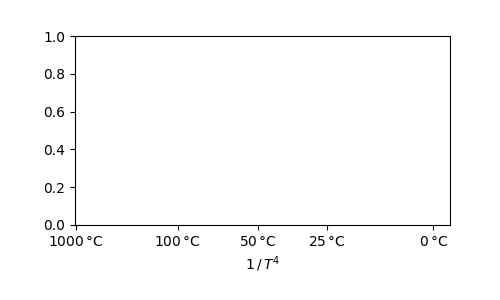

D47calib
Generate, combine, display and apply Δ47 calibrations
Calibrations included
D47calib provides the following pre-built calibrations:
breitenbach_2018:
Cave pearls analyzed by Breitenbach et al. (2018).
peral_2018:
Planktic foraminifera analyzed by Peral et al. (2018), reprocessed by _Daëron & Gray_ (in review).
jautzy_2020:
Synthetic calcites analyzed by Jautzy et al. (2020).
anderson_2021_mit:
Various natural and synthetic carbonates analyzed at MIT by Anderson et al. (2021).
anderson_2021_lsce:
Slow-growing mammillary calcite from Devils Hole and Laghetto Basso analyzed at LSCE by Anderson et al. (2021).
fiebig-2021:
Inorganic calcites analyzed by Fiebig et al. (2021).
huyghe_2022:
Marine calcitic bivalves analyzed by Huyghe et al. (2022).
devils_laghetto_2023:
Combined data set of slow-growing mammillary calcite from Devils Hole and Laghetto Basso, analyzed both at LSCE by Anderson et al. (2021) and at GU by Fiebig et al. (2021).
combined_2023:
Combined data set including all of the above.
1""" 2Generate, combine, display and apply Δ47 calibrations 3 4.. include:: ../../docpages/calibs.md 5""" 6 7__author__ = 'Mathieu Daëron' 8__contact__ = 'daeron@lsce.ipsl.fr' 9__copyright__ = 'Copyright (c) 2023 Mathieu Daëron' 10__license__ = 'MIT License - https://opensource.org/licenses/MIT' 11# __docformat__ = "restructuredtext" 12__date__ = '2023-04-30' 13__version__ = '0.1.0' 14 15 16import ogls as _ogls 17import numpy as _np 18from scipy.linalg import block_diag as _block_diag 19from scipy.interpolate import interp1d as _interp1d 20from matplotlib import pyplot as _ppl 21 22 23class D47calib(_ogls.InverseTPolynomial): 24 """ 25 Δ47 calibration class based on OGLS regression 26 of Δ47 as a polynomial function of inverse T. 27 """ 28 29 def __init__(self, 30 samples, T, D47, 31 sT = None, sD47 = None, 32 degrees = [0,2], xpower = 2, 33 color = (.5,.5,.5), 34 label = '', 35 description = '', 36 regress_now = False, 37 **kwargs): 38 """ 39 ### Parameters 40 41 + **samples**: a list of N sample names. 42 + **T**: a 1-D array (or array-like) of temperatures values (in degrees C), of size N. 43 + **D47**: a 1-D array (or array-like) of Δ47 values (in permil), of size N. 44 + **sT**: uncertainties on `T`. If specified as: 45 + a scalar: `sT` is treated as the standard error applicable to all `T` values; 46 + a 1-D array-like of size N: `sT` is treated as the standard errors of `T`; 47 + a 2-D array-like of size (N, N): `sT` is treated as the (co)variance matrix of `T`. 48 + **sD47**: uncertainties on `D47`. If specified as: 49 + a scalar: `sD47` is treated as the standard error applicable to all `D47` values; 50 + a 1-D array-like of size N: `sD47` is treated as the standard errors of `D47`; 51 + a 2-D array-like of size (N, N): `sD47` is treated as the (co)variance matrix of `D47`. 52 + **degrees**: degrees of the polynomial regression, e.g., `[0, 2]` or `[0, 1, 2, 3, 4]`. 53 + **color**: a matplotlib-compliant color specification used in plots. 54 + **label**: a short description of the calibration. 55 + **description**: a longer description, including relevant references/DOIs. 56 + **regress_now**: if `True`, perform the regression immediately upon instantiation. 57 This is not necessary when `bfp` and `CM_bfp` are specified at instantiation time. 58 + **kwargs**: keyword arguments passed to the underlying `ogls.InverseTPolynomial()` call. 59 60 ### Notable attributes 61 62 + **N**: 63 The total number of observations (samples) in the calibration data. 64 + **samples**: 65 The list sample names. 66 + **T**: 67 1-D `ndarray` of temperatures in degrees C. 68 + **D47**: 69 1-D `ndarray` of Δ47 values in permil. 70 + **sT**: 71 2-D `ndarray` equal to the full (co)variance matrix for `T`. 72 + **D47**: 73 2-D `ndarray` equal to the full (co)variance matrix for `D47`. 74 + **xpower**: 75 By default, all `D47calib` graphical methods plot Δ47 as a function of 1/T<sup>2</sup>. 76 It is possible to change this behavior to use a different power of 1/T. 77 This is done by redefining the `xpower` attribute to a different, non-zero `int` value 78 (e.g. `foo.xpower = 1` to plot as a function of 1/T instead of 1/T<sup>2</sup>). 79 + **bfp**: 80 The best-fit parameters of the regression. 81 This is a `dict` with keys equal to the polynomial coefficients (see `bff` definition below) 82 + **bff()**: 83 The best-fit polynomial function of inverse T, defined as: 84 `bff(x) = sum(bfp[f'a{k}'] * x**k for k in degrees)` 85 Note that `bff` takes `x = 1/(T+273.15)` (instead of `T`) as input. 86 87 88 ### Examples 89 90 A very simple example: 91 92 ````py 93 from D47calib import D47calib 94 95 mycalib = D47calib( 96 samples = ['FOO', 'BAR'], 97 T = [0. , 25. ], 98 D47 = [0.7 , 0.6 ], 99 sT = 1., 100 sD47 = 0.01, 101 regress_now = True, 102 ) 103 104 T, sT = mycalib.T47(D47 = 0.650) # yields T = 11.7, sT = 1.9 105 ```` 106 """ 107 108 self.samples = samples[:] 109 self.color = color 110 self.label = label 111 self.description = description 112 self.D47 = _np.asarray(D47, dtype = 'float') 113 self.N = self.D47.size 114 115 if sD47 is None: 116 self.sD47 = _np.zeros((self.N, self.N)) 117 else: 118 self.sD47 = _np.asarray(sD47) 119 if len(self.sD47.shape) == 1: 120 self.sD47 = _np.diag(self.sD47**2) 121 elif len(self.sD47.shape) == 0: 122 self.sD47 = _np.eye(self.D47.size) * self.sD47**2 123 124 _ogls.InverseTPolynomial.__init__(self, T=T, Y=D47, sT=sT, sY=sD47, degrees = degrees, xpower = xpower, **kwargs) 125 126 if regress_now: 127 self.regress() 128 129 self._bff_deriv = lambda x: _np.array([k * self.bfp[f'a{k}'] * x**(k-1) for k in degrees if k > 0]).sum(axis = 0) 130 131 xi = _np.linspace(0,200**-1,1001) 132 self._inv_bff = _interp1d(self.bff(xi), xi) 133 134 self._D47_from_T = lambda T: self.bff((T+273.15)**-1) 135 self._T_from_D47 = lambda D47: self._inv_bff(D47)**-1 - 273.15 136 self._D47_from_T_deriv = lambda T: -(T+273.15)**-2 * self._bff_deriv((T+273.15)**-1) 137 self._T_from_D47_deriv = lambda D47: self._D47_from_T_deriv(self._T_from_D47(D47))**-1 138 139 def invT_xaxis(self, 140 xlabel = None, 141 Ti = [0,20,50,100,250,1000], 142 ): 143 """ 144 Create and return an `Axes` object with X values equal to 1/T<sup>2</sup>, 145 but labeled in degrees Celsius. 146 147 ### Parameters 148 149 + **xlabel**: 150 Custom label for X axis (`r'$1\,/\,T^2$'` by default) 151 + **Ti**: 152 Specify tick locations for X axis, in degrees C. 153 154 ### Returns 155 156 + an `matplotlib.axes.Axes` instance 157 158 ### Examples 159 160 ````py 161 from matplotlib import pyplot as ppl 162 from D47calib import combined_2023 as calib 163 164 fig = ppl.figure(figsize = (5,3)) 165 ppl.subplots_adjust(bottom = .25, left = .15) 166 ax = calib.invT_xaxis() 167 ax.set_xlim((0, 270**-2)) 168 ppl.savefig('example_invT_xaxis_2.png', dpi = 100) 169 ````` 170 This should result in something like this: 171 172 <img align="center" src="example_invT_xaxis_2.png"> 173 174 It is also possible to define the X axis using a different power of 1/T 175 by first redefining the `xpower` attribute: 176 177 ````py 178 calib.xpower = 4 179 fig = ppl.figure(figsize = (5,3)) 180 ppl.subplots_adjust(bottom = .25, left = .15) 181 ax = calib.invT_xaxis(Ti = [1000, 100, 50, 25, 0]) 182 ax.set_xlim((0, 270**-4)) 183 ppl.savefig('example_invT_xaxis_4.png', dpi = 100) 184 ```` 185 186 This should result in something like this: 187 188 <img align="center" src="example_invT_xaxis_4.png"> 189 """ 190 if xlabel is None: 191 xlabel = f'$1\\,/\\,T^{self.xpower}$' if self.xpower > 1 else '1/T' 192 _ppl.xlabel(xlabel) 193 _ppl.xticks([(273.15 + t) ** -self.xpower for t in sorted(Ti)[::-1]]) 194 ax = _ppl.gca() 195 ax.set_xticklabels([f"${t}\\,$°C" for t in sorted(Ti)[::-1]]) 196 ax.tick_params(which="major") 197 198 return ax 199 200 201 def plot_data(self, label = False, **kwargs): 202 """ 203 Plot Δ47 value of each sample as a function of 1/T<sup>2</sup>. 204 205 ### Parameters 206 207 + **label**: 208 + If `label` is a string, use this string as `label` for the underlyig 209 `matplotlib.pyplot.plot()` call. 210 + If `label = True`, use the caller's `label` attribute instead. 211 + If `label = False`, no label is specified (default behavior). 212 + **kwargs**: 213 keyword arguments passed to the underlying `matplotlib.pyplot.plot()` call. 214 215 ### Returns 216 217 + the return value(s) of the underlying `matplotlib.pyplot.plot()` call. 218 219 ### Example 220 221 ````py 222 from matplotlib import pyplot as ppl 223 from D47calib import huyghe_2022 as calib 224 225 fig = ppl.figure(figsize = (5,3)) 226 ppl.subplots_adjust(bottom = .25, left = .15) 227 calib.invT_xaxis(Ti = [0,10,25]) 228 calib.plot_data(label = True) 229 ppl.ylabel('$Δ_{47}$ (‰ I-CDES)') 230 ppl.legend() 231 ppl.savefig('example_plot_data.png', dpi = 100) 232 ````` 233 234 This should result in something like this: 235 236 <img align="center" src="example_plot_data.png"> 237 """ 238 if 'mec' not in kwargs: 239 kwargs['mec'] = self.color 240 if label is not False: 241 kwargs['label'] = self.label if label is True else label 242 return _ogls.InverseTPolynomial.plot_data(self, **kwargs) 243 244 245 def plot_error_bars(self, **kwargs): 246 """ 247 Plot Δ47 error bars (±1.96 SE) of each sample as a function of 1/T<sup>2</sup>. 248 249 ### Parameters 250 251 + **kwargs**: 252 keyword arguments passed to the underlying `matplotlib.pyplot.errrobar()` call. 253 254 ### Returns 255 256 + the return value(s) of the underlying `matplotlib.pyplot.errorbar()` call. 257 258 ### Example 259 260 ````py 261 from matplotlib import pyplot as ppl 262 from D47calib import huyghe_2022 as calib 263 264 fig = ppl.figure(figsize = (5,3)) 265 ppl.subplots_adjust(bottom = .25, left = .15) 266 calib.invT_xaxis(Ti = [0,10,25]) 267 calib.plot_error_bars(alpha = .4) 268 calib.plot_data(label = True) 269 ppl.ylabel('$Δ_{47}$ (‰ I-CDES)') 270 ppl.legend() 271 ppl.savefig('example_plot_error_bars.png', dpi = 100) 272 ````` 273 274 This should result in something like this: 275 276 <img align="center" src="example_plot_error_bars.png"> 277 """ 278 if 'ecolor' not in kwargs: 279 kwargs['ecolor'] = self.color 280 return _ogls.InverseTPolynomial.plot_error_bars(self, **kwargs) 281 282 283 def plot_error_ellipses(self, **kwargs): 284 """ 285 Plot Δ47 error ellipses (95 % confidence) of each sample as a function of 1/T<sup>2</sup>. 286 287 ### Parameters 288 289 + **kwargs**: 290 keyword arguments passed to the underlying `matplotlib.patches.Ellipse()` call. 291 292 ### Returns 293 294 + the return value(s) of the underlying `matplotlib.patches.Ellipse()` call. 295 296 ### Example 297 298 ````py 299 from matplotlib import pyplot as ppl 300 from D47calib import huyghe_2022 as calib 301 302 fig = ppl.figure(figsize = (5,3)) 303 ppl.subplots_adjust(bottom = .25, left = .15) 304 calib.invT_xaxis(Ti = [0,10,25]) 305 calib.plot_error_ellipses(alpha = .4) 306 calib.plot_data(label = True) 307 ppl.ylabel('$Δ_{47}$ (‰ I-CDES)') 308 ppl.legend() 309 ppl.savefig('example_plot_error_ellipses.png', dpi = 100) 310 ````` 311 312 This should result in something like this: 313 314 <img align="center" src="example_plot_error_ellipses.png"> 315 """ 316 if 'ec' not in kwargs: 317 kwargs['ec'] = self.color 318 return _ogls.InverseTPolynomial.plot_error_ellipses(self, **kwargs) 319 320 321 def plot_bff(self, label = False, **kwargs): 322 """ 323 Plot best-fit regression of Δ47 as a function of 1/T<sup>2</sup>. 324 325 ### Parameters 326 327 + **label**: 328 + If `label` is a string, use this string as `label` for the underlyig 329 `matplotlib.pyplot.plot()` call. 330 + If `label = True`, use the caller's `label` attribute instead. 331 + If `label = False`, no label is specified (default behavior). 332 + **kwargs**: 333 keyword arguments passed to the underlying `matplotlib.pyplot.plot()` call. 334 335 ### Returns 336 337 + the return value(s) of the underlying `matplotlib.pyplot.plot()` call. 338 339 ### Example 340 341 ````py 342 from matplotlib import pyplot as ppl 343 from D47calib import huyghe_2022 as calib 344 345 fig = ppl.figure(figsize = (5,3)) 346 ppl.subplots_adjust(bottom = .25, left = .15) 347 calib.invT_xaxis(Ti = [0,10,25]) 348 calib.plot_bff(label = True, dashes = (8,2,2,2)) 349 calib.plot_data() 350 ppl.ylabel('$Δ_{47}$ (‰ I-CDES)') 351 ppl.legend() 352 ppl.savefig('example_plot_bff.png', dpi = 100) 353 ````` 354 355 This should result in something like this: 356 357 <img align="center" src="example_plot_bff.png"> 358 """ 359 if 'color' not in kwargs: 360 kwargs['color'] = self.color 361 if label is not False: 362 kwargs['label'] = self.label if label is True else label 363 return _ogls.InverseTPolynomial.plot_bff(self, **kwargs) 364 365 366 def plot_bff_ci(self, **kwargs): 367 """ 368 Plot 95 % confidence region for best-fit regression of Δ47 as a function of 1/T<sup>2</sup>. 369 370 ### Parameters 371 372 + **label**: 373 + **kwargs**: 374 keyword arguments passed to the underlying `matplotlib.pyplot.fill_between()` call. 375 376 ### Returns 377 378 + the return value(s) of the underlying `matplotlib.pyplot.fill_between()` call. 379 380 ### Example 381 382 ````py 383 from matplotlib import pyplot as ppl 384 from D47calib import huyghe_2022 as calib 385 386 fig = ppl.figure(figsize = (5,3)) 387 ppl.subplots_adjust(bottom = .25, left = .15) 388 calib.invT_xaxis(Ti = [0,10,25]) 389 calib.plot_bff_ci(alpha = .15) 390 calib.plot_bff(label = True, dashes = (8,2,2,2)) 391 calib.plot_data() 392 ppl.ylabel('$Δ_{47}$ (‰ I-CDES)') 393 ppl.legend() 394 ppl.savefig('example_plot_bff_ci.png', dpi = 100) 395 ````` 396 397 This should result in something like this: 398 399 <img align="center" src="example_plot_bff_ci.png"> 400 """ 401 if 'color' not in kwargs: 402 kwargs['color'] = self.color 403 return _ogls.InverseTPolynomial.plot_bff_ci(self, **kwargs) 404 405 def T47(self, 406 D47 = None, 407 sD47 = None, 408 T=None, 409 sT = None, 410 error_from = 'both', 411 return_covar = False, 412 ): 413 ''' 414 When `D47` is input, computes corresponding T value(s). 415 `D47` input may be specified as a scalar, or as a 1-D array. 416 `T` output will then have the same type and size as `D47`. 417 418 When `T` is input, computes corresponding Δ47 value(s). 419 `T` input may be specified as a scalar, or as a 1-D array. 420 `D47` output will then have the same type and size as `T`. 421 422 Only one of either `D47` or `T` may be specified as input. 423 424 **Arguments:** 425 426 * `D47`: Δ47 value(s) to convert into temperature (`float` or 1-D array) 427 * `sD47`: Δ47 uncertainties, which may be: 428 - `None` (default) 429 - `float` or `int` (uniform standard error on `D47`) 430 - 1-D array (standard errors on `D47`) 431 - 2-D array (covariance matrix for `D47`) 432 * `T`: T value(s) to convert into Δ47 (`float` or 1-D array), in degrees C 433 * `sT`: T uncertainties, which may be: 434 - `None` (default) 435 - `float` or `int` (uniform standard error on `T`) 436 - 1-D array (standard errors on `T`) 437 - 2-D array (variance-covariance matrix for `T`) 438 * `error_from`: if set to `'both'` (default), returned errors take into account 439 input uncertainties (`sT` or `sD47`) as well as calibration uncertainties; 440 if set to `'calib'`, only calibration uncertainties are accounted for; 441 if set to `'sT'` or `'sD47'`, calibration uncertainties are ignored. 442 * `return_covar`: (False by default) whether to return the full covariance matrix 443 for returned `T` or `D47` values, otherwise return standard errors for the returned 444 `T` or `D47` values instead. 445 446 **Returns (with `D47` input):** 447 448 * `T`: temperature value(s) computed from `D47` 449 * `sT`: uncertainties on `T` value(s), whether as standard error(s) or covariance matrix 450 451 **Returns (with `T` input):** 452 453 * `D47`: Δ47 value(s) computed from `D47` 454 * `sD47`: uncertainties on `D47` value(s), whether as standard error(s) or covariance matrix 455 456 ### Example 457 458 ````py 459 import numpy as np 460 from matplotlib import pyplot as ppl 461 from D47calib import combined_2023 as calib 462 463 X = np.linspace(1473**-2, 270**-2) 464 D47, sD47 = calib.T47(T = X**-0.5 - 273.15) 465 466 fig = ppl.figure(figsize = (5,3)) 467 ppl.subplots_adjust(bottom = .25, left = .15) 468 calib.invT_xaxis() 469 ppl.plot(X, 1000 * sD47, 'r-') 470 ppl.ylabel('Calibration SE on $Δ_{47}$ values (ppm)') 471 ppl.savefig('example_SE47.png', dpi = 100) 472 ````` 473 474 This should result in something like this: 475 476 <img src="example_SE47.png"> 477 ''' 478 479 if D47 is None and T is None: 480 raise ValueError('Either D47 or T must be specified, but both are undefined.') 481 482 if D47 is not None and T is not None: 483 raise ValueError('Either D47 or T must be specified, but not both.') 484 485 if T is not None: 486 487 D47 = self._D47_from_T(T) 488 Np = len(self.degrees) 489 N = D47.size 490 491 ### Compute covariance matrix of (*bfp, *T): 492 CM = _np.zeros((Np+N, Np+N)) 493 494 if error_from in ['calib', 'both']: 495 CM[:Np, :Np] = self.bfp_CM[:,:] 496 497 if (sT is not None) and error_from in ['sT', 'both']: 498 _sT = _np.asarray(sT) 499 if _sT.ndim == 0: 500 for k in range(N): 501 CM[Np+k, Np+k] = _sT**2 502 elif _sT.ndim == 1: 503 for k in range(N): 504 CM[Np+k, Np+k] = _sT[k]**2 505 elif _sT.ndim == 2: 506 CM[-N:, -N:] = _sT[:,:] 507 508 ### Compute Jacobian of D47(T) relative to (*bfp, *T): 509 _T = _np.asarray(T) 510 if _T.ndim == 0: 511 _T = _np.expand_dims(_T, 0) 512 J = _np.zeros((N, Np+N)) 513 514 if (sT is not None) and error_from in ['sT', 'both']: 515 for k in range(N): 516 J[k, Np+k] = self._D47_from_T_deriv(_T[k]) 517 518 if error_from in ['calib', 'both']: 519 520 for k in range(Np): 521 522 p1 = {_: self.bfp[_] for _ in self.bfp} 523 p1[f'a{self.degrees[k]}'] += 0.001 * self.bfp_CM[k,k]**.5 524 525 p2 = {_: self.bfp[_] for _ in self.bfp} 526 p2[f'a{self.degrees[k]}'] -= 0.001 * self.bfp_CM[k,k]**.5 527 528 J[:, k] = (self.model_fun(p1, (_T+273.15)**-1) - self.model_fun(p2, (_T+273.15)**-1)) / (0.002 * self.bfp_CM[k,k]**.5) 529 530 ### Error propagation: 531 CM_D47 = J @ CM @ J.T 532 533 if return_covar: 534 return D47, CM_D47 535 else: 536 return D47, float(_np.diag(CM_D47)**.5) if D47.ndim == 0 else _np.diag(CM_D47)**.5 537 538 if D47 is not None: 539 540 T = self._T_from_D47(D47) 541 Np = len(self.degrees) 542 N = T.size 543 544 ### Compute covariance matrix of (*bfp, *T): 545 CM = _np.zeros((Np+N, Np+N)) 546 547 if error_from in ['calib', 'both']: 548 CM[:Np, :Np] = self.bfp_CM[:,:] 549 550 if (sD47 is not None) and error_from in ['sD47', 'both']: 551 _sD47 = _np.asarray(sD47) 552 if _sD47.ndim == 0: 553 for k in range(N): 554 CM[Np+k, Np+k] = _sD47**2 555 elif _sD47.ndim == 1: 556 for k in range(N): 557 CM[Np+k, Np+k] = _sD47[k]**2 558 elif _sD47.ndim == 2: 559 CM[-N:, -N:] = _sD47[:,:] 560 561 ### Compute Jacobian of T(D47) relative to (*bfp, *D47): 562 _D47 = _np.asarray(D47) 563 if _D47.ndim == 0: 564 _D47 = _np.expand_dims(_D47, 0) 565 J = _np.zeros((N, Np+N)) 566 if (sD47 is not None) and error_from in ['sD47', 'both']: 567 for k in range(N): 568 J[k, Np+k] = self._T_from_D47_deriv(_D47[k]) 569 if error_from in ['calib', 'both']: 570 571 xi = _np.linspace(0,200**-1,1001)[1:] 572 for k in range(Np): 573 574 p1 = {_: self.bfp[_] for _ in self.bfp} 575 p1[f'a{self.degrees[k]}'] += 0.001 * self.bfp_CM[k,k]**.5 576 T_from_D47_p1 = _interp1d(self.model_fun(p1, xi), xi**-1 - 273.15) 577 578 p2 = {_: self.bfp[_] for _ in self.bfp} 579 p2[f'a{self.degrees[k]}'] -= 0.001 * self.bfp_CM[k,k]**.5 580 T_from_D47_p2 = _interp1d(self.model_fun(p2, xi), xi**-1 - 273.15) 581 582 J[:, k] = (T_from_D47_p1(_D47) - T_from_D47_p2(_D47)) / (0.002 * self.bfp_CM[k,k]**.5) 583 584 ### Error propagation: 585 CM_T = J @ CM @ J.T 586 587 if return_covar: 588 return T, CM_T 589 else: 590 return T, float(_np.diag(CM_T)**.5) if T.ndim == 0 else _np.diag(CM_T)**.5 591 592 593 def plot_T47_errors( 594 self, 595 calibname = None, 596 rD47 = 0.010, 597 Nr = [2,4,8,12,20], 598 Tmin = 0, 599 Tmax = 120, 600 colors = [(1,0,0),(1,.5,0),(.25,.75,0),(0,.5,1),(0.5,0.5,0.5)], 601 yscale = 'lin', 602 ): 603 """ 604 Plot SE of T reconstructed using the calibration as a function of T for various 605 combinations of analytical precision and number of analytical replicates. 606 607 **Arguments** 608 609 + **calibname**: 610 Which calibration name to display. By default, use `label` attribute. 611 + **rD47**: 612 Analytical precision of a single analysis. 613 + **Nr**: 614 A list of lines to plot, each corresponding to a given number of replicates. 615 + **Tmin**: 616 Minimum T to plot. 617 + **Tmax**: 618 Maximum T to plot. 619 + **colors**: 620 A list of colors to distinguish the plotted lines. 621 + **yscale**: 622 + If `'lin'`, the Y axis uses a linear scale. 623 + If `'log'`, the Y axis uses a logarithmic scale. 624 625 **Example** 626 627 ````py 628 from matplotlib import pyplot as ppl 629 from D47calib import devils_laghetto_2023 as calib 630 631 fig = ppl.figure(figsize = (3.5,4)) 632 ppl.subplots_adjust(bottom = .2, left = .15) 633 calib.plot_T47_errors( 634 calibname = 'Devils Laghetto calibration', 635 Nr = [1,2,4,16], 636 Tmin =0, 637 Tmax = 40, 638 ) 639 ppl.savefig('example_SE_T.png', dpi = 100) 640 ```` 641 642 This should result in something like this: 643 644 <img src="example_SE_T.png"> 645 """ 646 647 if calibname is None: 648 calibname = self.label 649 650 Nr = _np.array(Nr) 651 if len(colors) < Nr.size: 652 print('WARNING: Too few colors to plot different numbers of replicates; generating new colors.') 653 from colorsys import hsv_to_rgb 654 hsv = [(x*1.0/Nr.size, 1, .9) for x in range(Nr.size)] 655 colors = [hsv_to_rgb(*x) for x in hsv] 656 657 Ti = _np.linspace(Tmin, Tmax) 658 D47i, _ = self.T47(T = Ti) 659 _, sT_calib = self.T47(D47 = D47i, error_from = 'calib') 660 661 ymax, ymin = 0, 1e6 662 for N,c in zip(Nr, colors): 663 _, sT = self.T47(D47 = D47i, sD47 = rD47 / N**.5, error_from = 'sD47') 664 _ppl.plot(Ti, sT, '-', color = c, label=f'SE for {N} replicate{"s" if N > 1 else ""}') 665 ymin = min(ymin, min(sT)) 666 ymax = max(ymax, max(sT)) 667 668 _ppl.plot(Ti, sT_calib, 'k--', label='SE from calibration') 669 670 _ppl.legend(fontsize=9) 671 _ppl.xlabel("T (°C)") 672 673 _ppl.ylabel("Standard error on reconstructed T (°C)") 674 675 # yticks([0,.5,1,1.5,2]) 676 _ppl.title(f"{calibname},\nassuming external Δ$_{{47}}$ repeatability of {rD47:.3f} ‰", size = 9) 677 _ppl.grid( alpha = .25) 678 if yscale == 'lin': 679 _ppl.axis([Ti[0], Ti[-1], 0, ymax*1.05]) 680 t1, t2 = self.T.min(), self.T.max() 681 _ppl.plot([t1, t2], [0, 0], 'k-', alpha = .25, lw = 8, solid_capstyle = 'butt', clip_on = False) 682 _ppl.text((t1+t2)/2, 0, 'range of observations\n', alpha = .4, size = 7, ha = 'center', va = 'bottom', style = 'italic') 683 _ppl.axis([None, None, None, _ppl.axis()[-1]*1.25]) 684 elif yscale == 'log': 685 ymin /= 2 686 _ppl.axis([Ti[0], Ti[-1], ymin, ymax*1.05]) 687 _ppl.yscale('log') 688 t1, t2 = self.T.min(), self.T.max() 689 _ppl.plot([t1, t2], [ymin, ymin], 'k-', alpha = .25, lw = 8, solid_capstyle = 'butt', clip_on = False) 690 _ppl.text((t1+t2)/2, ymin, 'range of observations\n', alpha = .4, size = 7, ha = 'center', va = 'bottom', style = 'italic') 691 692 def export_data(self, csvfile, sep = ',', label = False, T_correl = False, D47_correl = False): 693 """ 694 Write calibration data to a csv file. 695 696 ### Parameters 697 698 + **csvfile**: 699 The filename to write data to. 700 + **sep**: 701 The separator between CSV fields. 702 + **label**: 703 + If specified as `True`, include a `Dataset` column with the calibration's `label` attribute. 704 + If specified as a `str`, include a `Dataset` column with that string. 705 + If specified as `False`, do not include a `Dataset` column. 706 + **T_correl**: 707 + If `True`, include correlations between all `T` values. 708 + **D47_correl**: 709 + If `True`, include correlations between all `D47` values. 710 711 ### Example 712 713 ````py 714 D47calib.huyghe_2022.export_data( 715 csvfile = 'example_export_data.csv', 716 T_correl = True, 717 D47_correl = True, 718 ) 719 ```` 720 721 This should result in something like this ([link](example_export_data.csv)): 722 723 .. include:: ../../docs/example_export_data.md 724 725 """ 726 n = len(str(self.N)) 727 728 with open(csvfile, 'w') as f: 729 f.write(sep.join(['ID', 'Sample', 'T', 'SE_T', 'D47', 'SE_D47'])) 730 731 if label: 732 f.write(f'{sep}Dataset') 733 734 if T_correl: 735 inv_diag_sT = _np.diag(_np.diag(self.sT)**-.5) 736 Tcorrel = inv_diag_sT @ self.sT @ inv_diag_sT 737 f.write(sep.join(['']+[f'Tcorrel_{k+1:0{n}d}' for k in range(self.N)])) 738 739 if D47_correl: 740 inv_diag_sD47 = _np.diag(_np.diag(self.sD47)**-.5) 741 D47correl = inv_diag_sD47 @ self.sD47 @ inv_diag_sD47 742 f.write(sep.join(['']+[f'D47correl_{k+1:0{n}d}' for k in range(self.N)])) 743 744 for k, (s, T, sT, D47, sD47) in enumerate(zip( 745 self.samples, 746 self.T, 747 _np.diag(self.sT)**.5, 748 self.D47, 749 _np.diag(self.sD47)**.5, 750 )): 751 f.write('\n' + sep.join([f'{k+1:0{n}d}', s, f'{T:.2f}', f'{sT:.2f}', f'{D47:.4f}', f'{sD47:.4f}'])) 752 if label: 753 if label is True: 754 f.write(f'{sep}{self.label}') 755 else: 756 f.write(f'{sep}{label}') 757 if T_correl: 758 f.write(sep.join(['']+[ 759 f'{Tcorrel[k,_]:.0f}' 760 if f'{Tcorrel[k,_]:.6f}'[-6:] == '000000' 761 else f'{Tcorrel[k,_]:.6f}' 762 for _ in range(self.N)])) 763 if D47_correl: 764 f.write(sep.join(['']+[ 765 f'{D47correl[k,_]:.0f}' 766 if f'{D47correl[k,_]:.6f}'[-6:] == '000000' 767 else f'{D47correl[k,_]:.6f}' 768 for _ in range(self.N)])) 769 770 771 def export(self, name, filename): 772 """ 773 Save `D47calib` object as an importable file. 774 775 ### Parameters 776 777 + **name**: 778 The name of the variable to export. 779 + **filename**: 780 The filename to write to. 781 782 ### Example 783 784 ````py 785 D47calib.anderson_2021_lsce.export('foo', 'bar.py') 786 ```` 787 788 This should result in a `bar.py` file with the following contents: 789 790 ````py 791 foo = D47calib( 792 samples = ['LGB-2', 'DVH-2'], 793 T = [7.9, 33.7], 794 D47 = [0.6485720997671647, 0.5695972909966959], 795 sT = [[0.04000000000000001, 0.0], [0.0, 0.04000000000000001]], 796 sD47 = [[8.72797097773764e-06, 2.951894073404263e-06], [2.9518940734042614e-06, 7.498611746762038e-06]], 797 description = 'Devils Hole & Laghetto Basso from Anderson et al. (2021), processed in I-CDES', 798 label = 'Slow-growing calcites from Anderson et al. (2021)', 799 color = (0, 0.5, 0), 800 degrees = [0, 2], 801 bfp = {'a0': 0.1583220210575451, 'a2': 38724.41371782721}, 802 bfp_CM = [[0.00035908667755871876, -30.707016431538836], [-30.70701643153884, 2668091.396598919]], 803 chisq = 6.421311854486162e-27, 804 Nf = 0, 805 ) 806 ```` 807 """ 808 with open(filename, 'w') as f: 809 f.write(f''' 810{name} = D47calib( 811 samples = {self.samples}, 812 T = {list(self.T)}, 813 D47 = {list(self.D47)}, 814 sT = {[list(l) for l in self.sT]}, 815 sD47 = {[list(l) for l in self.sD47]}, 816 description = {repr(self.description)}, 817 label = {repr(self.label)}, 818 color = {self.color}, 819 degrees = {list(self.degrees)}, 820 bfp = {self.bfp}, 821 bfp_CM = {[list(l) for l in self.bfp_CM]}, 822 chisq = {self.chisq}, 823 Nf = {self.Nf}, 824 ) 825''') 826 827def combine_D47calibs(calibs, degrees = [0,2], same_T = []): 828 ''' 829 Combine data from several `D47calib` instances. 830 831 ### Parameters 832 833 + **calibs**: 834 A list of `D47calib` instances 835 + **degrees**: 836 The polynomial degrees of the combined regression. 837 + **same_T**: 838 Use this `list` to specify when samples from different calibrations are known/postulated 839 to have formed at the same temperature (e.g. `DVH-2` and `DHC2-8` from the `fiebig_2021` 840 and `anderson_2021_lsce` data sets). Each element of `same_T` is a `list` with the names 841 of two or more samples formed at the same temperature. 842 843 For example, the `combined_2023` calibration is computed with: 844 845 `same_T = [['DVH-2', DHC-2-8'], ['ETH-1-1100-SAM', 'ETH-1-1100']]` 846 847 Note that when samples from different calibrations have the same name, 848 it is not necessary to explicitly list them in `same_T`. 849 850 Also note that the regression will fail if samples listed together in `same_T` 851 actually have different `T` values specified in the original calibrations. 852 853 ### Example 854 855 The `devils_laghetto_2023` calibration is computed using the following code: 856 857 ````py 858 K = [fiebig_2021.samples.index(_) for _ in ['LGB-2', 'DVH-2', 'DHC2-8']] 859 860 fiebig_temp = D47calib( 861 samples = [fiebig_2021.samples[_] for _ in K], 862 T = fiebig_2021.T[K], 863 D47 = fiebig_2021.D47[K], 864 sT = fiebig_2021.sT[K,:][:,K], 865 sD47 = fiebig_2021.sD47[K,:][:,K], 866 regress_now = True, 867 ) 868 869 devils_laghetto_2023 = combine_D47calibs( 870 calibs = [ 871 anderson_2021_lsce, 872 fiebig_temp, 873 ], 874 degrees = [0,2], 875 same_T = [ 876 {'DVH-2', 'DHC2-8'}, 877 ], 878 ) 879 ```` 880 ''' 881 882 samples = [s for c in calibs for s in c.samples] 883 T = [t for c in calibs for t in c.T] 884 D47 = [x for c in calibs for x in c.D47] 885 sD47 = _block_diag(*[c.sD47 for c in calibs]) 886 sT = _block_diag(*[c.sT for c in calibs]) 887 888 for i in range(len(samples)): 889 for j in range(len(samples)): 890 if i != j: 891 if (samples[i] == samples[j] or 892 any([samples[i] in _ and samples[j] in _ for _ in same_T])): 893 894 sT[i,j] = (sT[i,i] * sT[j,j])**.5 895 896 calib = D47calib( 897 samples = samples, 898 T = T, 899 D47 = D47, 900 sT = sT, 901 sD47 = sD47, 902 degrees = degrees, 903 regress_now = True, 904 ) 905 906 return calib 907 908from ._calibs import *
24class D47calib(_ogls.InverseTPolynomial): 25 """ 26 Δ47 calibration class based on OGLS regression 27 of Δ47 as a polynomial function of inverse T. 28 """ 29 30 def __init__(self, 31 samples, T, D47, 32 sT = None, sD47 = None, 33 degrees = [0,2], xpower = 2, 34 color = (.5,.5,.5), 35 label = '', 36 description = '', 37 regress_now = False, 38 **kwargs): 39 """ 40 ### Parameters 41 42 + **samples**: a list of N sample names. 43 + **T**: a 1-D array (or array-like) of temperatures values (in degrees C), of size N. 44 + **D47**: a 1-D array (or array-like) of Δ47 values (in permil), of size N. 45 + **sT**: uncertainties on `T`. If specified as: 46 + a scalar: `sT` is treated as the standard error applicable to all `T` values; 47 + a 1-D array-like of size N: `sT` is treated as the standard errors of `T`; 48 + a 2-D array-like of size (N, N): `sT` is treated as the (co)variance matrix of `T`. 49 + **sD47**: uncertainties on `D47`. If specified as: 50 + a scalar: `sD47` is treated as the standard error applicable to all `D47` values; 51 + a 1-D array-like of size N: `sD47` is treated as the standard errors of `D47`; 52 + a 2-D array-like of size (N, N): `sD47` is treated as the (co)variance matrix of `D47`. 53 + **degrees**: degrees of the polynomial regression, e.g., `[0, 2]` or `[0, 1, 2, 3, 4]`. 54 + **color**: a matplotlib-compliant color specification used in plots. 55 + **label**: a short description of the calibration. 56 + **description**: a longer description, including relevant references/DOIs. 57 + **regress_now**: if `True`, perform the regression immediately upon instantiation. 58 This is not necessary when `bfp` and `CM_bfp` are specified at instantiation time. 59 + **kwargs**: keyword arguments passed to the underlying `ogls.InverseTPolynomial()` call. 60 61 ### Notable attributes 62 63 + **N**: 64 The total number of observations (samples) in the calibration data. 65 + **samples**: 66 The list sample names. 67 + **T**: 68 1-D `ndarray` of temperatures in degrees C. 69 + **D47**: 70 1-D `ndarray` of Δ47 values in permil. 71 + **sT**: 72 2-D `ndarray` equal to the full (co)variance matrix for `T`. 73 + **D47**: 74 2-D `ndarray` equal to the full (co)variance matrix for `D47`. 75 + **xpower**: 76 By default, all `D47calib` graphical methods plot Δ47 as a function of 1/T<sup>2</sup>. 77 It is possible to change this behavior to use a different power of 1/T. 78 This is done by redefining the `xpower` attribute to a different, non-zero `int` value 79 (e.g. `foo.xpower = 1` to plot as a function of 1/T instead of 1/T<sup>2</sup>). 80 + **bfp**: 81 The best-fit parameters of the regression. 82 This is a `dict` with keys equal to the polynomial coefficients (see `bff` definition below) 83 + **bff()**: 84 The best-fit polynomial function of inverse T, defined as: 85 `bff(x) = sum(bfp[f'a{k}'] * x**k for k in degrees)` 86 Note that `bff` takes `x = 1/(T+273.15)` (instead of `T`) as input. 87 88 89 ### Examples 90 91 A very simple example: 92 93 ````py 94 from D47calib import D47calib 95 96 mycalib = D47calib( 97 samples = ['FOO', 'BAR'], 98 T = [0. , 25. ], 99 D47 = [0.7 , 0.6 ], 100 sT = 1., 101 sD47 = 0.01, 102 regress_now = True, 103 ) 104 105 T, sT = mycalib.T47(D47 = 0.650) # yields T = 11.7, sT = 1.9 106 ```` 107 """ 108 109 self.samples = samples[:] 110 self.color = color 111 self.label = label 112 self.description = description 113 self.D47 = _np.asarray(D47, dtype = 'float') 114 self.N = self.D47.size 115 116 if sD47 is None: 117 self.sD47 = _np.zeros((self.N, self.N)) 118 else: 119 self.sD47 = _np.asarray(sD47) 120 if len(self.sD47.shape) == 1: 121 self.sD47 = _np.diag(self.sD47**2) 122 elif len(self.sD47.shape) == 0: 123 self.sD47 = _np.eye(self.D47.size) * self.sD47**2 124 125 _ogls.InverseTPolynomial.__init__(self, T=T, Y=D47, sT=sT, sY=sD47, degrees = degrees, xpower = xpower, **kwargs) 126 127 if regress_now: 128 self.regress() 129 130 self._bff_deriv = lambda x: _np.array([k * self.bfp[f'a{k}'] * x**(k-1) for k in degrees if k > 0]).sum(axis = 0) 131 132 xi = _np.linspace(0,200**-1,1001) 133 self._inv_bff = _interp1d(self.bff(xi), xi) 134 135 self._D47_from_T = lambda T: self.bff((T+273.15)**-1) 136 self._T_from_D47 = lambda D47: self._inv_bff(D47)**-1 - 273.15 137 self._D47_from_T_deriv = lambda T: -(T+273.15)**-2 * self._bff_deriv((T+273.15)**-1) 138 self._T_from_D47_deriv = lambda D47: self._D47_from_T_deriv(self._T_from_D47(D47))**-1 139 140 def invT_xaxis(self, 141 xlabel = None, 142 Ti = [0,20,50,100,250,1000], 143 ): 144 """ 145 Create and return an `Axes` object with X values equal to 1/T<sup>2</sup>, 146 but labeled in degrees Celsius. 147 148 ### Parameters 149 150 + **xlabel**: 151 Custom label for X axis (`r'$1\,/\,T^2$'` by default) 152 + **Ti**: 153 Specify tick locations for X axis, in degrees C. 154 155 ### Returns 156 157 + an `matplotlib.axes.Axes` instance 158 159 ### Examples 160 161 ````py 162 from matplotlib import pyplot as ppl 163 from D47calib import combined_2023 as calib 164 165 fig = ppl.figure(figsize = (5,3)) 166 ppl.subplots_adjust(bottom = .25, left = .15) 167 ax = calib.invT_xaxis() 168 ax.set_xlim((0, 270**-2)) 169 ppl.savefig('example_invT_xaxis_2.png', dpi = 100) 170 ````` 171 This should result in something like this: 172 173 <img align="center" src="example_invT_xaxis_2.png"> 174 175 It is also possible to define the X axis using a different power of 1/T 176 by first redefining the `xpower` attribute: 177 178 ````py 179 calib.xpower = 4 180 fig = ppl.figure(figsize = (5,3)) 181 ppl.subplots_adjust(bottom = .25, left = .15) 182 ax = calib.invT_xaxis(Ti = [1000, 100, 50, 25, 0]) 183 ax.set_xlim((0, 270**-4)) 184 ppl.savefig('example_invT_xaxis_4.png', dpi = 100) 185 ```` 186 187 This should result in something like this: 188 189 <img align="center" src="example_invT_xaxis_4.png"> 190 """ 191 if xlabel is None: 192 xlabel = f'$1\\,/\\,T^{self.xpower}$' if self.xpower > 1 else '1/T' 193 _ppl.xlabel(xlabel) 194 _ppl.xticks([(273.15 + t) ** -self.xpower for t in sorted(Ti)[::-1]]) 195 ax = _ppl.gca() 196 ax.set_xticklabels([f"${t}\\,$°C" for t in sorted(Ti)[::-1]]) 197 ax.tick_params(which="major") 198 199 return ax 200 201 202 def plot_data(self, label = False, **kwargs): 203 """ 204 Plot Δ47 value of each sample as a function of 1/T<sup>2</sup>. 205 206 ### Parameters 207 208 + **label**: 209 + If `label` is a string, use this string as `label` for the underlyig 210 `matplotlib.pyplot.plot()` call. 211 + If `label = True`, use the caller's `label` attribute instead. 212 + If `label = False`, no label is specified (default behavior). 213 + **kwargs**: 214 keyword arguments passed to the underlying `matplotlib.pyplot.plot()` call. 215 216 ### Returns 217 218 + the return value(s) of the underlying `matplotlib.pyplot.plot()` call. 219 220 ### Example 221 222 ````py 223 from matplotlib import pyplot as ppl 224 from D47calib import huyghe_2022 as calib 225 226 fig = ppl.figure(figsize = (5,3)) 227 ppl.subplots_adjust(bottom = .25, left = .15) 228 calib.invT_xaxis(Ti = [0,10,25]) 229 calib.plot_data(label = True) 230 ppl.ylabel('$Δ_{47}$ (‰ I-CDES)') 231 ppl.legend() 232 ppl.savefig('example_plot_data.png', dpi = 100) 233 ````` 234 235 This should result in something like this: 236 237 <img align="center" src="example_plot_data.png"> 238 """ 239 if 'mec' not in kwargs: 240 kwargs['mec'] = self.color 241 if label is not False: 242 kwargs['label'] = self.label if label is True else label 243 return _ogls.InverseTPolynomial.plot_data(self, **kwargs) 244 245 246 def plot_error_bars(self, **kwargs): 247 """ 248 Plot Δ47 error bars (±1.96 SE) of each sample as a function of 1/T<sup>2</sup>. 249 250 ### Parameters 251 252 + **kwargs**: 253 keyword arguments passed to the underlying `matplotlib.pyplot.errrobar()` call. 254 255 ### Returns 256 257 + the return value(s) of the underlying `matplotlib.pyplot.errorbar()` call. 258 259 ### Example 260 261 ````py 262 from matplotlib import pyplot as ppl 263 from D47calib import huyghe_2022 as calib 264 265 fig = ppl.figure(figsize = (5,3)) 266 ppl.subplots_adjust(bottom = .25, left = .15) 267 calib.invT_xaxis(Ti = [0,10,25]) 268 calib.plot_error_bars(alpha = .4) 269 calib.plot_data(label = True) 270 ppl.ylabel('$Δ_{47}$ (‰ I-CDES)') 271 ppl.legend() 272 ppl.savefig('example_plot_error_bars.png', dpi = 100) 273 ````` 274 275 This should result in something like this: 276 277 <img align="center" src="example_plot_error_bars.png"> 278 """ 279 if 'ecolor' not in kwargs: 280 kwargs['ecolor'] = self.color 281 return _ogls.InverseTPolynomial.plot_error_bars(self, **kwargs) 282 283 284 def plot_error_ellipses(self, **kwargs): 285 """ 286 Plot Δ47 error ellipses (95 % confidence) of each sample as a function of 1/T<sup>2</sup>. 287 288 ### Parameters 289 290 + **kwargs**: 291 keyword arguments passed to the underlying `matplotlib.patches.Ellipse()` call. 292 293 ### Returns 294 295 + the return value(s) of the underlying `matplotlib.patches.Ellipse()` call. 296 297 ### Example 298 299 ````py 300 from matplotlib import pyplot as ppl 301 from D47calib import huyghe_2022 as calib 302 303 fig = ppl.figure(figsize = (5,3)) 304 ppl.subplots_adjust(bottom = .25, left = .15) 305 calib.invT_xaxis(Ti = [0,10,25]) 306 calib.plot_error_ellipses(alpha = .4) 307 calib.plot_data(label = True) 308 ppl.ylabel('$Δ_{47}$ (‰ I-CDES)') 309 ppl.legend() 310 ppl.savefig('example_plot_error_ellipses.png', dpi = 100) 311 ````` 312 313 This should result in something like this: 314 315 <img align="center" src="example_plot_error_ellipses.png"> 316 """ 317 if 'ec' not in kwargs: 318 kwargs['ec'] = self.color 319 return _ogls.InverseTPolynomial.plot_error_ellipses(self, **kwargs) 320 321 322 def plot_bff(self, label = False, **kwargs): 323 """ 324 Plot best-fit regression of Δ47 as a function of 1/T<sup>2</sup>. 325 326 ### Parameters 327 328 + **label**: 329 + If `label` is a string, use this string as `label` for the underlyig 330 `matplotlib.pyplot.plot()` call. 331 + If `label = True`, use the caller's `label` attribute instead. 332 + If `label = False`, no label is specified (default behavior). 333 + **kwargs**: 334 keyword arguments passed to the underlying `matplotlib.pyplot.plot()` call. 335 336 ### Returns 337 338 + the return value(s) of the underlying `matplotlib.pyplot.plot()` call. 339 340 ### Example 341 342 ````py 343 from matplotlib import pyplot as ppl 344 from D47calib import huyghe_2022 as calib 345 346 fig = ppl.figure(figsize = (5,3)) 347 ppl.subplots_adjust(bottom = .25, left = .15) 348 calib.invT_xaxis(Ti = [0,10,25]) 349 calib.plot_bff(label = True, dashes = (8,2,2,2)) 350 calib.plot_data() 351 ppl.ylabel('$Δ_{47}$ (‰ I-CDES)') 352 ppl.legend() 353 ppl.savefig('example_plot_bff.png', dpi = 100) 354 ````` 355 356 This should result in something like this: 357 358 <img align="center" src="example_plot_bff.png"> 359 """ 360 if 'color' not in kwargs: 361 kwargs['color'] = self.color 362 if label is not False: 363 kwargs['label'] = self.label if label is True else label 364 return _ogls.InverseTPolynomial.plot_bff(self, **kwargs) 365 366 367 def plot_bff_ci(self, **kwargs): 368 """ 369 Plot 95 % confidence region for best-fit regression of Δ47 as a function of 1/T<sup>2</sup>. 370 371 ### Parameters 372 373 + **label**: 374 + **kwargs**: 375 keyword arguments passed to the underlying `matplotlib.pyplot.fill_between()` call. 376 377 ### Returns 378 379 + the return value(s) of the underlying `matplotlib.pyplot.fill_between()` call. 380 381 ### Example 382 383 ````py 384 from matplotlib import pyplot as ppl 385 from D47calib import huyghe_2022 as calib 386 387 fig = ppl.figure(figsize = (5,3)) 388 ppl.subplots_adjust(bottom = .25, left = .15) 389 calib.invT_xaxis(Ti = [0,10,25]) 390 calib.plot_bff_ci(alpha = .15) 391 calib.plot_bff(label = True, dashes = (8,2,2,2)) 392 calib.plot_data() 393 ppl.ylabel('$Δ_{47}$ (‰ I-CDES)') 394 ppl.legend() 395 ppl.savefig('example_plot_bff_ci.png', dpi = 100) 396 ````` 397 398 This should result in something like this: 399 400 <img align="center" src="example_plot_bff_ci.png"> 401 """ 402 if 'color' not in kwargs: 403 kwargs['color'] = self.color 404 return _ogls.InverseTPolynomial.plot_bff_ci(self, **kwargs) 405 406 def T47(self, 407 D47 = None, 408 sD47 = None, 409 T=None, 410 sT = None, 411 error_from = 'both', 412 return_covar = False, 413 ): 414 ''' 415 When `D47` is input, computes corresponding T value(s). 416 `D47` input may be specified as a scalar, or as a 1-D array. 417 `T` output will then have the same type and size as `D47`. 418 419 When `T` is input, computes corresponding Δ47 value(s). 420 `T` input may be specified as a scalar, or as a 1-D array. 421 `D47` output will then have the same type and size as `T`. 422 423 Only one of either `D47` or `T` may be specified as input. 424 425 **Arguments:** 426 427 * `D47`: Δ47 value(s) to convert into temperature (`float` or 1-D array) 428 * `sD47`: Δ47 uncertainties, which may be: 429 - `None` (default) 430 - `float` or `int` (uniform standard error on `D47`) 431 - 1-D array (standard errors on `D47`) 432 - 2-D array (covariance matrix for `D47`) 433 * `T`: T value(s) to convert into Δ47 (`float` or 1-D array), in degrees C 434 * `sT`: T uncertainties, which may be: 435 - `None` (default) 436 - `float` or `int` (uniform standard error on `T`) 437 - 1-D array (standard errors on `T`) 438 - 2-D array (variance-covariance matrix for `T`) 439 * `error_from`: if set to `'both'` (default), returned errors take into account 440 input uncertainties (`sT` or `sD47`) as well as calibration uncertainties; 441 if set to `'calib'`, only calibration uncertainties are accounted for; 442 if set to `'sT'` or `'sD47'`, calibration uncertainties are ignored. 443 * `return_covar`: (False by default) whether to return the full covariance matrix 444 for returned `T` or `D47` values, otherwise return standard errors for the returned 445 `T` or `D47` values instead. 446 447 **Returns (with `D47` input):** 448 449 * `T`: temperature value(s) computed from `D47` 450 * `sT`: uncertainties on `T` value(s), whether as standard error(s) or covariance matrix 451 452 **Returns (with `T` input):** 453 454 * `D47`: Δ47 value(s) computed from `D47` 455 * `sD47`: uncertainties on `D47` value(s), whether as standard error(s) or covariance matrix 456 457 ### Example 458 459 ````py 460 import numpy as np 461 from matplotlib import pyplot as ppl 462 from D47calib import combined_2023 as calib 463 464 X = np.linspace(1473**-2, 270**-2) 465 D47, sD47 = calib.T47(T = X**-0.5 - 273.15) 466 467 fig = ppl.figure(figsize = (5,3)) 468 ppl.subplots_adjust(bottom = .25, left = .15) 469 calib.invT_xaxis() 470 ppl.plot(X, 1000 * sD47, 'r-') 471 ppl.ylabel('Calibration SE on $Δ_{47}$ values (ppm)') 472 ppl.savefig('example_SE47.png', dpi = 100) 473 ````` 474 475 This should result in something like this: 476 477 <img src="example_SE47.png"> 478 ''' 479 480 if D47 is None and T is None: 481 raise ValueError('Either D47 or T must be specified, but both are undefined.') 482 483 if D47 is not None and T is not None: 484 raise ValueError('Either D47 or T must be specified, but not both.') 485 486 if T is not None: 487 488 D47 = self._D47_from_T(T) 489 Np = len(self.degrees) 490 N = D47.size 491 492 ### Compute covariance matrix of (*bfp, *T): 493 CM = _np.zeros((Np+N, Np+N)) 494 495 if error_from in ['calib', 'both']: 496 CM[:Np, :Np] = self.bfp_CM[:,:] 497 498 if (sT is not None) and error_from in ['sT', 'both']: 499 _sT = _np.asarray(sT) 500 if _sT.ndim == 0: 501 for k in range(N): 502 CM[Np+k, Np+k] = _sT**2 503 elif _sT.ndim == 1: 504 for k in range(N): 505 CM[Np+k, Np+k] = _sT[k]**2 506 elif _sT.ndim == 2: 507 CM[-N:, -N:] = _sT[:,:] 508 509 ### Compute Jacobian of D47(T) relative to (*bfp, *T): 510 _T = _np.asarray(T) 511 if _T.ndim == 0: 512 _T = _np.expand_dims(_T, 0) 513 J = _np.zeros((N, Np+N)) 514 515 if (sT is not None) and error_from in ['sT', 'both']: 516 for k in range(N): 517 J[k, Np+k] = self._D47_from_T_deriv(_T[k]) 518 519 if error_from in ['calib', 'both']: 520 521 for k in range(Np): 522 523 p1 = {_: self.bfp[_] for _ in self.bfp} 524 p1[f'a{self.degrees[k]}'] += 0.001 * self.bfp_CM[k,k]**.5 525 526 p2 = {_: self.bfp[_] for _ in self.bfp} 527 p2[f'a{self.degrees[k]}'] -= 0.001 * self.bfp_CM[k,k]**.5 528 529 J[:, k] = (self.model_fun(p1, (_T+273.15)**-1) - self.model_fun(p2, (_T+273.15)**-1)) / (0.002 * self.bfp_CM[k,k]**.5) 530 531 ### Error propagation: 532 CM_D47 = J @ CM @ J.T 533 534 if return_covar: 535 return D47, CM_D47 536 else: 537 return D47, float(_np.diag(CM_D47)**.5) if D47.ndim == 0 else _np.diag(CM_D47)**.5 538 539 if D47 is not None: 540 541 T = self._T_from_D47(D47) 542 Np = len(self.degrees) 543 N = T.size 544 545 ### Compute covariance matrix of (*bfp, *T): 546 CM = _np.zeros((Np+N, Np+N)) 547 548 if error_from in ['calib', 'both']: 549 CM[:Np, :Np] = self.bfp_CM[:,:] 550 551 if (sD47 is not None) and error_from in ['sD47', 'both']: 552 _sD47 = _np.asarray(sD47) 553 if _sD47.ndim == 0: 554 for k in range(N): 555 CM[Np+k, Np+k] = _sD47**2 556 elif _sD47.ndim == 1: 557 for k in range(N): 558 CM[Np+k, Np+k] = _sD47[k]**2 559 elif _sD47.ndim == 2: 560 CM[-N:, -N:] = _sD47[:,:] 561 562 ### Compute Jacobian of T(D47) relative to (*bfp, *D47): 563 _D47 = _np.asarray(D47) 564 if _D47.ndim == 0: 565 _D47 = _np.expand_dims(_D47, 0) 566 J = _np.zeros((N, Np+N)) 567 if (sD47 is not None) and error_from in ['sD47', 'both']: 568 for k in range(N): 569 J[k, Np+k] = self._T_from_D47_deriv(_D47[k]) 570 if error_from in ['calib', 'both']: 571 572 xi = _np.linspace(0,200**-1,1001)[1:] 573 for k in range(Np): 574 575 p1 = {_: self.bfp[_] for _ in self.bfp} 576 p1[f'a{self.degrees[k]}'] += 0.001 * self.bfp_CM[k,k]**.5 577 T_from_D47_p1 = _interp1d(self.model_fun(p1, xi), xi**-1 - 273.15) 578 579 p2 = {_: self.bfp[_] for _ in self.bfp} 580 p2[f'a{self.degrees[k]}'] -= 0.001 * self.bfp_CM[k,k]**.5 581 T_from_D47_p2 = _interp1d(self.model_fun(p2, xi), xi**-1 - 273.15) 582 583 J[:, k] = (T_from_D47_p1(_D47) - T_from_D47_p2(_D47)) / (0.002 * self.bfp_CM[k,k]**.5) 584 585 ### Error propagation: 586 CM_T = J @ CM @ J.T 587 588 if return_covar: 589 return T, CM_T 590 else: 591 return T, float(_np.diag(CM_T)**.5) if T.ndim == 0 else _np.diag(CM_T)**.5 592 593 594 def plot_T47_errors( 595 self, 596 calibname = None, 597 rD47 = 0.010, 598 Nr = [2,4,8,12,20], 599 Tmin = 0, 600 Tmax = 120, 601 colors = [(1,0,0),(1,.5,0),(.25,.75,0),(0,.5,1),(0.5,0.5,0.5)], 602 yscale = 'lin', 603 ): 604 """ 605 Plot SE of T reconstructed using the calibration as a function of T for various 606 combinations of analytical precision and number of analytical replicates. 607 608 **Arguments** 609 610 + **calibname**: 611 Which calibration name to display. By default, use `label` attribute. 612 + **rD47**: 613 Analytical precision of a single analysis. 614 + **Nr**: 615 A list of lines to plot, each corresponding to a given number of replicates. 616 + **Tmin**: 617 Minimum T to plot. 618 + **Tmax**: 619 Maximum T to plot. 620 + **colors**: 621 A list of colors to distinguish the plotted lines. 622 + **yscale**: 623 + If `'lin'`, the Y axis uses a linear scale. 624 + If `'log'`, the Y axis uses a logarithmic scale. 625 626 **Example** 627 628 ````py 629 from matplotlib import pyplot as ppl 630 from D47calib import devils_laghetto_2023 as calib 631 632 fig = ppl.figure(figsize = (3.5,4)) 633 ppl.subplots_adjust(bottom = .2, left = .15) 634 calib.plot_T47_errors( 635 calibname = 'Devils Laghetto calibration', 636 Nr = [1,2,4,16], 637 Tmin =0, 638 Tmax = 40, 639 ) 640 ppl.savefig('example_SE_T.png', dpi = 100) 641 ```` 642 643 This should result in something like this: 644 645 <img src="example_SE_T.png"> 646 """ 647 648 if calibname is None: 649 calibname = self.label 650 651 Nr = _np.array(Nr) 652 if len(colors) < Nr.size: 653 print('WARNING: Too few colors to plot different numbers of replicates; generating new colors.') 654 from colorsys import hsv_to_rgb 655 hsv = [(x*1.0/Nr.size, 1, .9) for x in range(Nr.size)] 656 colors = [hsv_to_rgb(*x) for x in hsv] 657 658 Ti = _np.linspace(Tmin, Tmax) 659 D47i, _ = self.T47(T = Ti) 660 _, sT_calib = self.T47(D47 = D47i, error_from = 'calib') 661 662 ymax, ymin = 0, 1e6 663 for N,c in zip(Nr, colors): 664 _, sT = self.T47(D47 = D47i, sD47 = rD47 / N**.5, error_from = 'sD47') 665 _ppl.plot(Ti, sT, '-', color = c, label=f'SE for {N} replicate{"s" if N > 1 else ""}') 666 ymin = min(ymin, min(sT)) 667 ymax = max(ymax, max(sT)) 668 669 _ppl.plot(Ti, sT_calib, 'k--', label='SE from calibration') 670 671 _ppl.legend(fontsize=9) 672 _ppl.xlabel("T (°C)") 673 674 _ppl.ylabel("Standard error on reconstructed T (°C)") 675 676 # yticks([0,.5,1,1.5,2]) 677 _ppl.title(f"{calibname},\nassuming external Δ$_{{47}}$ repeatability of {rD47:.3f} ‰", size = 9) 678 _ppl.grid( alpha = .25) 679 if yscale == 'lin': 680 _ppl.axis([Ti[0], Ti[-1], 0, ymax*1.05]) 681 t1, t2 = self.T.min(), self.T.max() 682 _ppl.plot([t1, t2], [0, 0], 'k-', alpha = .25, lw = 8, solid_capstyle = 'butt', clip_on = False) 683 _ppl.text((t1+t2)/2, 0, 'range of observations\n', alpha = .4, size = 7, ha = 'center', va = 'bottom', style = 'italic') 684 _ppl.axis([None, None, None, _ppl.axis()[-1]*1.25]) 685 elif yscale == 'log': 686 ymin /= 2 687 _ppl.axis([Ti[0], Ti[-1], ymin, ymax*1.05]) 688 _ppl.yscale('log') 689 t1, t2 = self.T.min(), self.T.max() 690 _ppl.plot([t1, t2], [ymin, ymin], 'k-', alpha = .25, lw = 8, solid_capstyle = 'butt', clip_on = False) 691 _ppl.text((t1+t2)/2, ymin, 'range of observations\n', alpha = .4, size = 7, ha = 'center', va = 'bottom', style = 'italic') 692 693 def export_data(self, csvfile, sep = ',', label = False, T_correl = False, D47_correl = False): 694 """ 695 Write calibration data to a csv file. 696 697 ### Parameters 698 699 + **csvfile**: 700 The filename to write data to. 701 + **sep**: 702 The separator between CSV fields. 703 + **label**: 704 + If specified as `True`, include a `Dataset` column with the calibration's `label` attribute. 705 + If specified as a `str`, include a `Dataset` column with that string. 706 + If specified as `False`, do not include a `Dataset` column. 707 + **T_correl**: 708 + If `True`, include correlations between all `T` values. 709 + **D47_correl**: 710 + If `True`, include correlations between all `D47` values. 711 712 ### Example 713 714 ````py 715 D47calib.huyghe_2022.export_data( 716 csvfile = 'example_export_data.csv', 717 T_correl = True, 718 D47_correl = True, 719 ) 720 ```` 721 722 This should result in something like this ([link](example_export_data.csv)): 723 724 .. include:: ../../docs/example_export_data.md 725 726 """ 727 n = len(str(self.N)) 728 729 with open(csvfile, 'w') as f: 730 f.write(sep.join(['ID', 'Sample', 'T', 'SE_T', 'D47', 'SE_D47'])) 731 732 if label: 733 f.write(f'{sep}Dataset') 734 735 if T_correl: 736 inv_diag_sT = _np.diag(_np.diag(self.sT)**-.5) 737 Tcorrel = inv_diag_sT @ self.sT @ inv_diag_sT 738 f.write(sep.join(['']+[f'Tcorrel_{k+1:0{n}d}' for k in range(self.N)])) 739 740 if D47_correl: 741 inv_diag_sD47 = _np.diag(_np.diag(self.sD47)**-.5) 742 D47correl = inv_diag_sD47 @ self.sD47 @ inv_diag_sD47 743 f.write(sep.join(['']+[f'D47correl_{k+1:0{n}d}' for k in range(self.N)])) 744 745 for k, (s, T, sT, D47, sD47) in enumerate(zip( 746 self.samples, 747 self.T, 748 _np.diag(self.sT)**.5, 749 self.D47, 750 _np.diag(self.sD47)**.5, 751 )): 752 f.write('\n' + sep.join([f'{k+1:0{n}d}', s, f'{T:.2f}', f'{sT:.2f}', f'{D47:.4f}', f'{sD47:.4f}'])) 753 if label: 754 if label is True: 755 f.write(f'{sep}{self.label}') 756 else: 757 f.write(f'{sep}{label}') 758 if T_correl: 759 f.write(sep.join(['']+[ 760 f'{Tcorrel[k,_]:.0f}' 761 if f'{Tcorrel[k,_]:.6f}'[-6:] == '000000' 762 else f'{Tcorrel[k,_]:.6f}' 763 for _ in range(self.N)])) 764 if D47_correl: 765 f.write(sep.join(['']+[ 766 f'{D47correl[k,_]:.0f}' 767 if f'{D47correl[k,_]:.6f}'[-6:] == '000000' 768 else f'{D47correl[k,_]:.6f}' 769 for _ in range(self.N)])) 770 771 772 def export(self, name, filename): 773 """ 774 Save `D47calib` object as an importable file. 775 776 ### Parameters 777 778 + **name**: 779 The name of the variable to export. 780 + **filename**: 781 The filename to write to. 782 783 ### Example 784 785 ````py 786 D47calib.anderson_2021_lsce.export('foo', 'bar.py') 787 ```` 788 789 This should result in a `bar.py` file with the following contents: 790 791 ````py 792 foo = D47calib( 793 samples = ['LGB-2', 'DVH-2'], 794 T = [7.9, 33.7], 795 D47 = [0.6485720997671647, 0.5695972909966959], 796 sT = [[0.04000000000000001, 0.0], [0.0, 0.04000000000000001]], 797 sD47 = [[8.72797097773764e-06, 2.951894073404263e-06], [2.9518940734042614e-06, 7.498611746762038e-06]], 798 description = 'Devils Hole & Laghetto Basso from Anderson et al. (2021), processed in I-CDES', 799 label = 'Slow-growing calcites from Anderson et al. (2021)', 800 color = (0, 0.5, 0), 801 degrees = [0, 2], 802 bfp = {'a0': 0.1583220210575451, 'a2': 38724.41371782721}, 803 bfp_CM = [[0.00035908667755871876, -30.707016431538836], [-30.70701643153884, 2668091.396598919]], 804 chisq = 6.421311854486162e-27, 805 Nf = 0, 806 ) 807 ```` 808 """ 809 with open(filename, 'w') as f: 810 f.write(f''' 811{name} = D47calib( 812 samples = {self.samples}, 813 T = {list(self.T)}, 814 D47 = {list(self.D47)}, 815 sT = {[list(l) for l in self.sT]}, 816 sD47 = {[list(l) for l in self.sD47]}, 817 description = {repr(self.description)}, 818 label = {repr(self.label)}, 819 color = {self.color}, 820 degrees = {list(self.degrees)}, 821 bfp = {self.bfp}, 822 bfp_CM = {[list(l) for l in self.bfp_CM]}, 823 chisq = {self.chisq}, 824 Nf = {self.Nf}, 825 ) 826''')
Δ47 calibration class based on OGLS regression of Δ47 as a polynomial function of inverse T.
30 def __init__(self, 31 samples, T, D47, 32 sT = None, sD47 = None, 33 degrees = [0,2], xpower = 2, 34 color = (.5,.5,.5), 35 label = '', 36 description = '', 37 regress_now = False, 38 **kwargs): 39 """ 40 ### Parameters 41 42 + **samples**: a list of N sample names. 43 + **T**: a 1-D array (or array-like) of temperatures values (in degrees C), of size N. 44 + **D47**: a 1-D array (or array-like) of Δ47 values (in permil), of size N. 45 + **sT**: uncertainties on `T`. If specified as: 46 + a scalar: `sT` is treated as the standard error applicable to all `T` values; 47 + a 1-D array-like of size N: `sT` is treated as the standard errors of `T`; 48 + a 2-D array-like of size (N, N): `sT` is treated as the (co)variance matrix of `T`. 49 + **sD47**: uncertainties on `D47`. If specified as: 50 + a scalar: `sD47` is treated as the standard error applicable to all `D47` values; 51 + a 1-D array-like of size N: `sD47` is treated as the standard errors of `D47`; 52 + a 2-D array-like of size (N, N): `sD47` is treated as the (co)variance matrix of `D47`. 53 + **degrees**: degrees of the polynomial regression, e.g., `[0, 2]` or `[0, 1, 2, 3, 4]`. 54 + **color**: a matplotlib-compliant color specification used in plots. 55 + **label**: a short description of the calibration. 56 + **description**: a longer description, including relevant references/DOIs. 57 + **regress_now**: if `True`, perform the regression immediately upon instantiation. 58 This is not necessary when `bfp` and `CM_bfp` are specified at instantiation time. 59 + **kwargs**: keyword arguments passed to the underlying `ogls.InverseTPolynomial()` call. 60 61 ### Notable attributes 62 63 + **N**: 64 The total number of observations (samples) in the calibration data. 65 + **samples**: 66 The list sample names. 67 + **T**: 68 1-D `ndarray` of temperatures in degrees C. 69 + **D47**: 70 1-D `ndarray` of Δ47 values in permil. 71 + **sT**: 72 2-D `ndarray` equal to the full (co)variance matrix for `T`. 73 + **D47**: 74 2-D `ndarray` equal to the full (co)variance matrix for `D47`. 75 + **xpower**: 76 By default, all `D47calib` graphical methods plot Δ47 as a function of 1/T<sup>2</sup>. 77 It is possible to change this behavior to use a different power of 1/T. 78 This is done by redefining the `xpower` attribute to a different, non-zero `int` value 79 (e.g. `foo.xpower = 1` to plot as a function of 1/T instead of 1/T<sup>2</sup>). 80 + **bfp**: 81 The best-fit parameters of the regression. 82 This is a `dict` with keys equal to the polynomial coefficients (see `bff` definition below) 83 + **bff()**: 84 The best-fit polynomial function of inverse T, defined as: 85 `bff(x) = sum(bfp[f'a{k}'] * x**k for k in degrees)` 86 Note that `bff` takes `x = 1/(T+273.15)` (instead of `T`) as input. 87 88 89 ### Examples 90 91 A very simple example: 92 93 ````py 94 from D47calib import D47calib 95 96 mycalib = D47calib( 97 samples = ['FOO', 'BAR'], 98 T = [0. , 25. ], 99 D47 = [0.7 , 0.6 ], 100 sT = 1., 101 sD47 = 0.01, 102 regress_now = True, 103 ) 104 105 T, sT = mycalib.T47(D47 = 0.650) # yields T = 11.7, sT = 1.9 106 ```` 107 """ 108 109 self.samples = samples[:] 110 self.color = color 111 self.label = label 112 self.description = description 113 self.D47 = _np.asarray(D47, dtype = 'float') 114 self.N = self.D47.size 115 116 if sD47 is None: 117 self.sD47 = _np.zeros((self.N, self.N)) 118 else: 119 self.sD47 = _np.asarray(sD47) 120 if len(self.sD47.shape) == 1: 121 self.sD47 = _np.diag(self.sD47**2) 122 elif len(self.sD47.shape) == 0: 123 self.sD47 = _np.eye(self.D47.size) * self.sD47**2 124 125 _ogls.InverseTPolynomial.__init__(self, T=T, Y=D47, sT=sT, sY=sD47, degrees = degrees, xpower = xpower, **kwargs) 126 127 if regress_now: 128 self.regress() 129 130 self._bff_deriv = lambda x: _np.array([k * self.bfp[f'a{k}'] * x**(k-1) for k in degrees if k > 0]).sum(axis = 0) 131 132 xi = _np.linspace(0,200**-1,1001) 133 self._inv_bff = _interp1d(self.bff(xi), xi) 134 135 self._D47_from_T = lambda T: self.bff((T+273.15)**-1) 136 self._T_from_D47 = lambda D47: self._inv_bff(D47)**-1 - 273.15 137 self._D47_from_T_deriv = lambda T: -(T+273.15)**-2 * self._bff_deriv((T+273.15)**-1) 138 self._T_from_D47_deriv = lambda D47: self._D47_from_T_deriv(self._T_from_D47(D47))**-1
Parameters
- samples: a list of N sample names.
- T: a 1-D array (or array-like) of temperatures values (in degrees C), of size N.
- D47: a 1-D array (or array-like) of Δ47 values (in permil), of size N.
- sT: uncertainties on
T. If specified as:- a scalar:
sTis treated as the standard error applicable to allTvalues; - a 1-D array-like of size N:
sTis treated as the standard errors ofT; - a 2-D array-like of size (N, N):
sTis treated as the (co)variance matrix ofT.
- a scalar:
- sD47: uncertainties on
D47. If specified as:- a scalar:
sD47is treated as the standard error applicable to allD47values; - a 1-D array-like of size N:
sD47is treated as the standard errors ofD47; - a 2-D array-like of size (N, N):
sD47is treated as the (co)variance matrix ofD47.
- a scalar:
- degrees: degrees of the polynomial regression, e.g.,
[0, 2]or[0, 1, 2, 3, 4]. - color: a matplotlib-compliant color specification used in plots.
- label: a short description of the calibration.
- description: a longer description, including relevant references/DOIs.
- regress_now: if
True, perform the regression immediately upon instantiation. This is not necessary whenbfpandCM_bfpare specified at instantiation time. - kwargs: keyword arguments passed to the underlying
ogls.InverseTPolynomial()call.
Notable attributes
- N: The total number of observations (samples) in the calibration data.
- samples: The list sample names.
- T:
1-D
ndarrayof temperatures in degrees C. - D47:
1-D
ndarrayof Δ47 values in permil. - sT:
2-D
ndarrayequal to the full (co)variance matrix forT. - D47:
2-D
ndarrayequal to the full (co)variance matrix forD47. - xpower:
By default, all
D47calibgraphical methods plot Δ47 as a function of 1/T2. It is possible to change this behavior to use a different power of 1/T. This is done by redefining thexpowerattribute to a different, non-zerointvalue (e.g.foo.xpower = 1to plot as a function of 1/T instead of 1/T2). - bfp:
The best-fit parameters of the regression.
This is a
dictwith keys equal to the polynomial coefficients (seebffdefinition below) - bff():
The best-fit polynomial function of inverse T, defined as:
bff(x) = sum(bfp[f'a{k}'] * x**k for k in degrees)Note thatbfftakesx = 1/(T+273.15)(instead ofT) as input.
Examples
A very simple example:
from D47calib import D47calib
mycalib = D47calib(
samples = ['FOO', 'BAR'],
T = [0. , 25. ],
D47 = [0.7 , 0.6 ],
sT = 1.,
sD47 = 0.01,
regress_now = True,
)
T, sT = mycalib.T47(D47 = 0.650) # yields T = 11.7, sT = 1.9
140 def invT_xaxis(self, 141 xlabel = None, 142 Ti = [0,20,50,100,250,1000], 143 ): 144 """ 145 Create and return an `Axes` object with X values equal to 1/T<sup>2</sup>, 146 but labeled in degrees Celsius. 147 148 ### Parameters 149 150 + **xlabel**: 151 Custom label for X axis (`r'$1\,/\,T^2$'` by default) 152 + **Ti**: 153 Specify tick locations for X axis, in degrees C. 154 155 ### Returns 156 157 + an `matplotlib.axes.Axes` instance 158 159 ### Examples 160 161 ````py 162 from matplotlib import pyplot as ppl 163 from D47calib import combined_2023 as calib 164 165 fig = ppl.figure(figsize = (5,3)) 166 ppl.subplots_adjust(bottom = .25, left = .15) 167 ax = calib.invT_xaxis() 168 ax.set_xlim((0, 270**-2)) 169 ppl.savefig('example_invT_xaxis_2.png', dpi = 100) 170 ````` 171 This should result in something like this: 172 173 <img align="center" src="example_invT_xaxis_2.png"> 174 175 It is also possible to define the X axis using a different power of 1/T 176 by first redefining the `xpower` attribute: 177 178 ````py 179 calib.xpower = 4 180 fig = ppl.figure(figsize = (5,3)) 181 ppl.subplots_adjust(bottom = .25, left = .15) 182 ax = calib.invT_xaxis(Ti = [1000, 100, 50, 25, 0]) 183 ax.set_xlim((0, 270**-4)) 184 ppl.savefig('example_invT_xaxis_4.png', dpi = 100) 185 ```` 186 187 This should result in something like this: 188 189 <img align="center" src="example_invT_xaxis_4.png"> 190 """ 191 if xlabel is None: 192 xlabel = f'$1\\,/\\,T^{self.xpower}$' if self.xpower > 1 else '1/T' 193 _ppl.xlabel(xlabel) 194 _ppl.xticks([(273.15 + t) ** -self.xpower for t in sorted(Ti)[::-1]]) 195 ax = _ppl.gca() 196 ax.set_xticklabels([f"${t}\\,$°C" for t in sorted(Ti)[::-1]]) 197 ax.tick_params(which="major") 198 199 return ax
Create and return an Axes object with X values equal to 1/T2,
but labeled in degrees Celsius.
Parameters
- xlabel:
Custom label for X axis (
r'$1\,/\,T^2$'by default) - Ti: Specify tick locations for X axis, in degrees C.
Returns
- an
matplotlib.axes.Axesinstance
Examples
from matplotlib import pyplot as ppl
from D47calib import combined_2023 as calib
fig = ppl.figure(figsize = (5,3))
ppl.subplots_adjust(bottom = .25, left = .15)
ax = calib.invT_xaxis()
ax.set_xlim((0, 270**-2))
ppl.savefig('example_invT_xaxis_2.png', dpi = 100)
This should result in something like this:

It is also possible to define the X axis using a different power of 1/T
by first redefining the xpower attribute:
calib.xpower = 4
fig = ppl.figure(figsize = (5,3))
ppl.subplots_adjust(bottom = .25, left = .15)
ax = calib.invT_xaxis(Ti = [1000, 100, 50, 25, 0])
ax.set_xlim((0, 270**-4))
ppl.savefig('example_invT_xaxis_4.png', dpi = 100)
This should result in something like this:

202 def plot_data(self, label = False, **kwargs): 203 """ 204 Plot Δ47 value of each sample as a function of 1/T<sup>2</sup>. 205 206 ### Parameters 207 208 + **label**: 209 + If `label` is a string, use this string as `label` for the underlyig 210 `matplotlib.pyplot.plot()` call. 211 + If `label = True`, use the caller's `label` attribute instead. 212 + If `label = False`, no label is specified (default behavior). 213 + **kwargs**: 214 keyword arguments passed to the underlying `matplotlib.pyplot.plot()` call. 215 216 ### Returns 217 218 + the return value(s) of the underlying `matplotlib.pyplot.plot()` call. 219 220 ### Example 221 222 ````py 223 from matplotlib import pyplot as ppl 224 from D47calib import huyghe_2022 as calib 225 226 fig = ppl.figure(figsize = (5,3)) 227 ppl.subplots_adjust(bottom = .25, left = .15) 228 calib.invT_xaxis(Ti = [0,10,25]) 229 calib.plot_data(label = True) 230 ppl.ylabel('$Δ_{47}$ (‰ I-CDES)') 231 ppl.legend() 232 ppl.savefig('example_plot_data.png', dpi = 100) 233 ````` 234 235 This should result in something like this: 236 237 <img align="center" src="example_plot_data.png"> 238 """ 239 if 'mec' not in kwargs: 240 kwargs['mec'] = self.color 241 if label is not False: 242 kwargs['label'] = self.label if label is True else label 243 return _ogls.InverseTPolynomial.plot_data(self, **kwargs)
Plot Δ47 value of each sample as a function of 1/T2.
Parameters
- label:
- If
labelis a string, use this string aslabelfor the underlyigmatplotlib.pyplot.plot()call. - If
label = True, use the caller'slabelattribute instead. - If
label = False, no label is specified (default behavior).
- If
- kwargs:
keyword arguments passed to the underlying
matplotlib.pyplot.plot()call.
Returns
- the return value(s) of the underlying
matplotlib.pyplot.plot()call.
Example
from matplotlib import pyplot as ppl
from D47calib import huyghe_2022 as calib
fig = ppl.figure(figsize = (5,3))
ppl.subplots_adjust(bottom = .25, left = .15)
calib.invT_xaxis(Ti = [0,10,25])
calib.plot_data(label = True)
ppl.ylabel('$Δ_{47}$ (‰ I-CDES)')
ppl.legend()
ppl.savefig('example_plot_data.png', dpi = 100)
This should result in something like this:
246 def plot_error_bars(self, **kwargs): 247 """ 248 Plot Δ47 error bars (±1.96 SE) of each sample as a function of 1/T<sup>2</sup>. 249 250 ### Parameters 251 252 + **kwargs**: 253 keyword arguments passed to the underlying `matplotlib.pyplot.errrobar()` call. 254 255 ### Returns 256 257 + the return value(s) of the underlying `matplotlib.pyplot.errorbar()` call. 258 259 ### Example 260 261 ````py 262 from matplotlib import pyplot as ppl 263 from D47calib import huyghe_2022 as calib 264 265 fig = ppl.figure(figsize = (5,3)) 266 ppl.subplots_adjust(bottom = .25, left = .15) 267 calib.invT_xaxis(Ti = [0,10,25]) 268 calib.plot_error_bars(alpha = .4) 269 calib.plot_data(label = True) 270 ppl.ylabel('$Δ_{47}$ (‰ I-CDES)') 271 ppl.legend() 272 ppl.savefig('example_plot_error_bars.png', dpi = 100) 273 ````` 274 275 This should result in something like this: 276 277 <img align="center" src="example_plot_error_bars.png"> 278 """ 279 if 'ecolor' not in kwargs: 280 kwargs['ecolor'] = self.color 281 return _ogls.InverseTPolynomial.plot_error_bars(self, **kwargs)
Plot Δ47 error bars (±1.96 SE) of each sample as a function of 1/T2.
Parameters
- kwargs:
keyword arguments passed to the underlying
matplotlib.pyplot.errrobar()call.
Returns
- the return value(s) of the underlying
matplotlib.pyplot.errorbar()call.
Example
from matplotlib import pyplot as ppl
from D47calib import huyghe_2022 as calib
fig = ppl.figure(figsize = (5,3))
ppl.subplots_adjust(bottom = .25, left = .15)
calib.invT_xaxis(Ti = [0,10,25])
calib.plot_error_bars(alpha = .4)
calib.plot_data(label = True)
ppl.ylabel('$Δ_{47}$ (‰ I-CDES)')
ppl.legend()
ppl.savefig('example_plot_error_bars.png', dpi = 100)
This should result in something like this:
284 def plot_error_ellipses(self, **kwargs): 285 """ 286 Plot Δ47 error ellipses (95 % confidence) of each sample as a function of 1/T<sup>2</sup>. 287 288 ### Parameters 289 290 + **kwargs**: 291 keyword arguments passed to the underlying `matplotlib.patches.Ellipse()` call. 292 293 ### Returns 294 295 + the return value(s) of the underlying `matplotlib.patches.Ellipse()` call. 296 297 ### Example 298 299 ````py 300 from matplotlib import pyplot as ppl 301 from D47calib import huyghe_2022 as calib 302 303 fig = ppl.figure(figsize = (5,3)) 304 ppl.subplots_adjust(bottom = .25, left = .15) 305 calib.invT_xaxis(Ti = [0,10,25]) 306 calib.plot_error_ellipses(alpha = .4) 307 calib.plot_data(label = True) 308 ppl.ylabel('$Δ_{47}$ (‰ I-CDES)') 309 ppl.legend() 310 ppl.savefig('example_plot_error_ellipses.png', dpi = 100) 311 ````` 312 313 This should result in something like this: 314 315 <img align="center" src="example_plot_error_ellipses.png"> 316 """ 317 if 'ec' not in kwargs: 318 kwargs['ec'] = self.color 319 return _ogls.InverseTPolynomial.plot_error_ellipses(self, **kwargs)
Plot Δ47 error ellipses (95 % confidence) of each sample as a function of 1/T2.
Parameters
- kwargs:
keyword arguments passed to the underlying
matplotlib.patches.Ellipse()call.
Returns
- the return value(s) of the underlying
matplotlib.patches.Ellipse()call.
Example
from matplotlib import pyplot as ppl
from D47calib import huyghe_2022 as calib
fig = ppl.figure(figsize = (5,3))
ppl.subplots_adjust(bottom = .25, left = .15)
calib.invT_xaxis(Ti = [0,10,25])
calib.plot_error_ellipses(alpha = .4)
calib.plot_data(label = True)
ppl.ylabel('$Δ_{47}$ (‰ I-CDES)')
ppl.legend()
ppl.savefig('example_plot_error_ellipses.png', dpi = 100)
This should result in something like this:
322 def plot_bff(self, label = False, **kwargs): 323 """ 324 Plot best-fit regression of Δ47 as a function of 1/T<sup>2</sup>. 325 326 ### Parameters 327 328 + **label**: 329 + If `label` is a string, use this string as `label` for the underlyig 330 `matplotlib.pyplot.plot()` call. 331 + If `label = True`, use the caller's `label` attribute instead. 332 + If `label = False`, no label is specified (default behavior). 333 + **kwargs**: 334 keyword arguments passed to the underlying `matplotlib.pyplot.plot()` call. 335 336 ### Returns 337 338 + the return value(s) of the underlying `matplotlib.pyplot.plot()` call. 339 340 ### Example 341 342 ````py 343 from matplotlib import pyplot as ppl 344 from D47calib import huyghe_2022 as calib 345 346 fig = ppl.figure(figsize = (5,3)) 347 ppl.subplots_adjust(bottom = .25, left = .15) 348 calib.invT_xaxis(Ti = [0,10,25]) 349 calib.plot_bff(label = True, dashes = (8,2,2,2)) 350 calib.plot_data() 351 ppl.ylabel('$Δ_{47}$ (‰ I-CDES)') 352 ppl.legend() 353 ppl.savefig('example_plot_bff.png', dpi = 100) 354 ````` 355 356 This should result in something like this: 357 358 <img align="center" src="example_plot_bff.png"> 359 """ 360 if 'color' not in kwargs: 361 kwargs['color'] = self.color 362 if label is not False: 363 kwargs['label'] = self.label if label is True else label 364 return _ogls.InverseTPolynomial.plot_bff(self, **kwargs)
Plot best-fit regression of Δ47 as a function of 1/T2.
Parameters
- label:
- If
labelis a string, use this string aslabelfor the underlyigmatplotlib.pyplot.plot()call. - If
label = True, use the caller'slabelattribute instead. - If
label = False, no label is specified (default behavior).
- If
- kwargs:
keyword arguments passed to the underlying
matplotlib.pyplot.plot()call.
Returns
- the return value(s) of the underlying
matplotlib.pyplot.plot()call.
Example
from matplotlib import pyplot as ppl
from D47calib import huyghe_2022 as calib
fig = ppl.figure(figsize = (5,3))
ppl.subplots_adjust(bottom = .25, left = .15)
calib.invT_xaxis(Ti = [0,10,25])
calib.plot_bff(label = True, dashes = (8,2,2,2))
calib.plot_data()
ppl.ylabel('$Δ_{47}$ (‰ I-CDES)')
ppl.legend()
ppl.savefig('example_plot_bff.png', dpi = 100)
This should result in something like this:
367 def plot_bff_ci(self, **kwargs): 368 """ 369 Plot 95 % confidence region for best-fit regression of Δ47 as a function of 1/T<sup>2</sup>. 370 371 ### Parameters 372 373 + **label**: 374 + **kwargs**: 375 keyword arguments passed to the underlying `matplotlib.pyplot.fill_between()` call. 376 377 ### Returns 378 379 + the return value(s) of the underlying `matplotlib.pyplot.fill_between()` call. 380 381 ### Example 382 383 ````py 384 from matplotlib import pyplot as ppl 385 from D47calib import huyghe_2022 as calib 386 387 fig = ppl.figure(figsize = (5,3)) 388 ppl.subplots_adjust(bottom = .25, left = .15) 389 calib.invT_xaxis(Ti = [0,10,25]) 390 calib.plot_bff_ci(alpha = .15) 391 calib.plot_bff(label = True, dashes = (8,2,2,2)) 392 calib.plot_data() 393 ppl.ylabel('$Δ_{47}$ (‰ I-CDES)') 394 ppl.legend() 395 ppl.savefig('example_plot_bff_ci.png', dpi = 100) 396 ````` 397 398 This should result in something like this: 399 400 <img align="center" src="example_plot_bff_ci.png"> 401 """ 402 if 'color' not in kwargs: 403 kwargs['color'] = self.color 404 return _ogls.InverseTPolynomial.plot_bff_ci(self, **kwargs)
Plot 95 % confidence region for best-fit regression of Δ47 as a function of 1/T2.
Parameters
- label:
- kwargs:
keyword arguments passed to the underlying
matplotlib.pyplot.fill_between()call.
Returns
- the return value(s) of the underlying
matplotlib.pyplot.fill_between()call.
Example
from matplotlib import pyplot as ppl
from D47calib import huyghe_2022 as calib
fig = ppl.figure(figsize = (5,3))
ppl.subplots_adjust(bottom = .25, left = .15)
calib.invT_xaxis(Ti = [0,10,25])
calib.plot_bff_ci(alpha = .15)
calib.plot_bff(label = True, dashes = (8,2,2,2))
calib.plot_data()
ppl.ylabel('$Δ_{47}$ (‰ I-CDES)')
ppl.legend()
ppl.savefig('example_plot_bff_ci.png', dpi = 100)
This should result in something like this:
406 def T47(self, 407 D47 = None, 408 sD47 = None, 409 T=None, 410 sT = None, 411 error_from = 'both', 412 return_covar = False, 413 ): 414 ''' 415 When `D47` is input, computes corresponding T value(s). 416 `D47` input may be specified as a scalar, or as a 1-D array. 417 `T` output will then have the same type and size as `D47`. 418 419 When `T` is input, computes corresponding Δ47 value(s). 420 `T` input may be specified as a scalar, or as a 1-D array. 421 `D47` output will then have the same type and size as `T`. 422 423 Only one of either `D47` or `T` may be specified as input. 424 425 **Arguments:** 426 427 * `D47`: Δ47 value(s) to convert into temperature (`float` or 1-D array) 428 * `sD47`: Δ47 uncertainties, which may be: 429 - `None` (default) 430 - `float` or `int` (uniform standard error on `D47`) 431 - 1-D array (standard errors on `D47`) 432 - 2-D array (covariance matrix for `D47`) 433 * `T`: T value(s) to convert into Δ47 (`float` or 1-D array), in degrees C 434 * `sT`: T uncertainties, which may be: 435 - `None` (default) 436 - `float` or `int` (uniform standard error on `T`) 437 - 1-D array (standard errors on `T`) 438 - 2-D array (variance-covariance matrix for `T`) 439 * `error_from`: if set to `'both'` (default), returned errors take into account 440 input uncertainties (`sT` or `sD47`) as well as calibration uncertainties; 441 if set to `'calib'`, only calibration uncertainties are accounted for; 442 if set to `'sT'` or `'sD47'`, calibration uncertainties are ignored. 443 * `return_covar`: (False by default) whether to return the full covariance matrix 444 for returned `T` or `D47` values, otherwise return standard errors for the returned 445 `T` or `D47` values instead. 446 447 **Returns (with `D47` input):** 448 449 * `T`: temperature value(s) computed from `D47` 450 * `sT`: uncertainties on `T` value(s), whether as standard error(s) or covariance matrix 451 452 **Returns (with `T` input):** 453 454 * `D47`: Δ47 value(s) computed from `D47` 455 * `sD47`: uncertainties on `D47` value(s), whether as standard error(s) or covariance matrix 456 457 ### Example 458 459 ````py 460 import numpy as np 461 from matplotlib import pyplot as ppl 462 from D47calib import combined_2023 as calib 463 464 X = np.linspace(1473**-2, 270**-2) 465 D47, sD47 = calib.T47(T = X**-0.5 - 273.15) 466 467 fig = ppl.figure(figsize = (5,3)) 468 ppl.subplots_adjust(bottom = .25, left = .15) 469 calib.invT_xaxis() 470 ppl.plot(X, 1000 * sD47, 'r-') 471 ppl.ylabel('Calibration SE on $Δ_{47}$ values (ppm)') 472 ppl.savefig('example_SE47.png', dpi = 100) 473 ````` 474 475 This should result in something like this: 476 477 <img src="example_SE47.png"> 478 ''' 479 480 if D47 is None and T is None: 481 raise ValueError('Either D47 or T must be specified, but both are undefined.') 482 483 if D47 is not None and T is not None: 484 raise ValueError('Either D47 or T must be specified, but not both.') 485 486 if T is not None: 487 488 D47 = self._D47_from_T(T) 489 Np = len(self.degrees) 490 N = D47.size 491 492 ### Compute covariance matrix of (*bfp, *T): 493 CM = _np.zeros((Np+N, Np+N)) 494 495 if error_from in ['calib', 'both']: 496 CM[:Np, :Np] = self.bfp_CM[:,:] 497 498 if (sT is not None) and error_from in ['sT', 'both']: 499 _sT = _np.asarray(sT) 500 if _sT.ndim == 0: 501 for k in range(N): 502 CM[Np+k, Np+k] = _sT**2 503 elif _sT.ndim == 1: 504 for k in range(N): 505 CM[Np+k, Np+k] = _sT[k]**2 506 elif _sT.ndim == 2: 507 CM[-N:, -N:] = _sT[:,:] 508 509 ### Compute Jacobian of D47(T) relative to (*bfp, *T): 510 _T = _np.asarray(T) 511 if _T.ndim == 0: 512 _T = _np.expand_dims(_T, 0) 513 J = _np.zeros((N, Np+N)) 514 515 if (sT is not None) and error_from in ['sT', 'both']: 516 for k in range(N): 517 J[k, Np+k] = self._D47_from_T_deriv(_T[k]) 518 519 if error_from in ['calib', 'both']: 520 521 for k in range(Np): 522 523 p1 = {_: self.bfp[_] for _ in self.bfp} 524 p1[f'a{self.degrees[k]}'] += 0.001 * self.bfp_CM[k,k]**.5 525 526 p2 = {_: self.bfp[_] for _ in self.bfp} 527 p2[f'a{self.degrees[k]}'] -= 0.001 * self.bfp_CM[k,k]**.5 528 529 J[:, k] = (self.model_fun(p1, (_T+273.15)**-1) - self.model_fun(p2, (_T+273.15)**-1)) / (0.002 * self.bfp_CM[k,k]**.5) 530 531 ### Error propagation: 532 CM_D47 = J @ CM @ J.T 533 534 if return_covar: 535 return D47, CM_D47 536 else: 537 return D47, float(_np.diag(CM_D47)**.5) if D47.ndim == 0 else _np.diag(CM_D47)**.5 538 539 if D47 is not None: 540 541 T = self._T_from_D47(D47) 542 Np = len(self.degrees) 543 N = T.size 544 545 ### Compute covariance matrix of (*bfp, *T): 546 CM = _np.zeros((Np+N, Np+N)) 547 548 if error_from in ['calib', 'both']: 549 CM[:Np, :Np] = self.bfp_CM[:,:] 550 551 if (sD47 is not None) and error_from in ['sD47', 'both']: 552 _sD47 = _np.asarray(sD47) 553 if _sD47.ndim == 0: 554 for k in range(N): 555 CM[Np+k, Np+k] = _sD47**2 556 elif _sD47.ndim == 1: 557 for k in range(N): 558 CM[Np+k, Np+k] = _sD47[k]**2 559 elif _sD47.ndim == 2: 560 CM[-N:, -N:] = _sD47[:,:] 561 562 ### Compute Jacobian of T(D47) relative to (*bfp, *D47): 563 _D47 = _np.asarray(D47) 564 if _D47.ndim == 0: 565 _D47 = _np.expand_dims(_D47, 0) 566 J = _np.zeros((N, Np+N)) 567 if (sD47 is not None) and error_from in ['sD47', 'both']: 568 for k in range(N): 569 J[k, Np+k] = self._T_from_D47_deriv(_D47[k]) 570 if error_from in ['calib', 'both']: 571 572 xi = _np.linspace(0,200**-1,1001)[1:] 573 for k in range(Np): 574 575 p1 = {_: self.bfp[_] for _ in self.bfp} 576 p1[f'a{self.degrees[k]}'] += 0.001 * self.bfp_CM[k,k]**.5 577 T_from_D47_p1 = _interp1d(self.model_fun(p1, xi), xi**-1 - 273.15) 578 579 p2 = {_: self.bfp[_] for _ in self.bfp} 580 p2[f'a{self.degrees[k]}'] -= 0.001 * self.bfp_CM[k,k]**.5 581 T_from_D47_p2 = _interp1d(self.model_fun(p2, xi), xi**-1 - 273.15) 582 583 J[:, k] = (T_from_D47_p1(_D47) - T_from_D47_p2(_D47)) / (0.002 * self.bfp_CM[k,k]**.5) 584 585 ### Error propagation: 586 CM_T = J @ CM @ J.T 587 588 if return_covar: 589 return T, CM_T 590 else: 591 return T, float(_np.diag(CM_T)**.5) if T.ndim == 0 else _np.diag(CM_T)**.5
When D47 is input, computes corresponding T value(s).
D47 input may be specified as a scalar, or as a 1-D array.
T output will then have the same type and size as D47.
When T is input, computes corresponding Δ47 value(s).
T input may be specified as a scalar, or as a 1-D array.
D47 output will then have the same type and size as T.
Only one of either D47 or T may be specified as input.
Arguments:
D47: Δ47 value(s) to convert into temperature (floator 1-D array)sD47: Δ47 uncertainties, which may be:None(default)floatorint(uniform standard error onD47)- 1-D array (standard errors on
D47) - 2-D array (covariance matrix for
D47)
T: T value(s) to convert into Δ47 (floator 1-D array), in degrees CsT: T uncertainties, which may be:None(default)floatorint(uniform standard error onT)- 1-D array (standard errors on
T) - 2-D array (variance-covariance matrix for
T)
error_from: if set to'both'(default), returned errors take into account input uncertainties (sTorsD47) as well as calibration uncertainties; if set to'calib', only calibration uncertainties are accounted for; if set to'sT'or'sD47', calibration uncertainties are ignored.return_covar: (False by default) whether to return the full covariance matrix for returnedTorD47values, otherwise return standard errors for the returnedTorD47values instead.
Returns (with D47 input):
T: temperature value(s) computed fromD47sT: uncertainties onTvalue(s), whether as standard error(s) or covariance matrix
Returns (with T input):
D47: Δ47 value(s) computed fromD47sD47: uncertainties onD47value(s), whether as standard error(s) or covariance matrix
Example
import numpy as np
from matplotlib import pyplot as ppl
from D47calib import combined_2023 as calib
X = np.linspace(1473**-2, 270**-2)
D47, sD47 = calib.T47(T = X**-0.5 - 273.15)
fig = ppl.figure(figsize = (5,3))
ppl.subplots_adjust(bottom = .25, left = .15)
calib.invT_xaxis()
ppl.plot(X, 1000 * sD47, 'r-')
ppl.ylabel('Calibration SE on $Δ_{47}$ values (ppm)')
ppl.savefig('example_SE47.png', dpi = 100)
This should result in something like this:
594 def plot_T47_errors( 595 self, 596 calibname = None, 597 rD47 = 0.010, 598 Nr = [2,4,8,12,20], 599 Tmin = 0, 600 Tmax = 120, 601 colors = [(1,0,0),(1,.5,0),(.25,.75,0),(0,.5,1),(0.5,0.5,0.5)], 602 yscale = 'lin', 603 ): 604 """ 605 Plot SE of T reconstructed using the calibration as a function of T for various 606 combinations of analytical precision and number of analytical replicates. 607 608 **Arguments** 609 610 + **calibname**: 611 Which calibration name to display. By default, use `label` attribute. 612 + **rD47**: 613 Analytical precision of a single analysis. 614 + **Nr**: 615 A list of lines to plot, each corresponding to a given number of replicates. 616 + **Tmin**: 617 Minimum T to plot. 618 + **Tmax**: 619 Maximum T to plot. 620 + **colors**: 621 A list of colors to distinguish the plotted lines. 622 + **yscale**: 623 + If `'lin'`, the Y axis uses a linear scale. 624 + If `'log'`, the Y axis uses a logarithmic scale. 625 626 **Example** 627 628 ````py 629 from matplotlib import pyplot as ppl 630 from D47calib import devils_laghetto_2023 as calib 631 632 fig = ppl.figure(figsize = (3.5,4)) 633 ppl.subplots_adjust(bottom = .2, left = .15) 634 calib.plot_T47_errors( 635 calibname = 'Devils Laghetto calibration', 636 Nr = [1,2,4,16], 637 Tmin =0, 638 Tmax = 40, 639 ) 640 ppl.savefig('example_SE_T.png', dpi = 100) 641 ```` 642 643 This should result in something like this: 644 645 <img src="example_SE_T.png"> 646 """ 647 648 if calibname is None: 649 calibname = self.label 650 651 Nr = _np.array(Nr) 652 if len(colors) < Nr.size: 653 print('WARNING: Too few colors to plot different numbers of replicates; generating new colors.') 654 from colorsys import hsv_to_rgb 655 hsv = [(x*1.0/Nr.size, 1, .9) for x in range(Nr.size)] 656 colors = [hsv_to_rgb(*x) for x in hsv] 657 658 Ti = _np.linspace(Tmin, Tmax) 659 D47i, _ = self.T47(T = Ti) 660 _, sT_calib = self.T47(D47 = D47i, error_from = 'calib') 661 662 ymax, ymin = 0, 1e6 663 for N,c in zip(Nr, colors): 664 _, sT = self.T47(D47 = D47i, sD47 = rD47 / N**.5, error_from = 'sD47') 665 _ppl.plot(Ti, sT, '-', color = c, label=f'SE for {N} replicate{"s" if N > 1 else ""}') 666 ymin = min(ymin, min(sT)) 667 ymax = max(ymax, max(sT)) 668 669 _ppl.plot(Ti, sT_calib, 'k--', label='SE from calibration') 670 671 _ppl.legend(fontsize=9) 672 _ppl.xlabel("T (°C)") 673 674 _ppl.ylabel("Standard error on reconstructed T (°C)") 675 676 # yticks([0,.5,1,1.5,2]) 677 _ppl.title(f"{calibname},\nassuming external Δ$_{{47}}$ repeatability of {rD47:.3f} ‰", size = 9) 678 _ppl.grid( alpha = .25) 679 if yscale == 'lin': 680 _ppl.axis([Ti[0], Ti[-1], 0, ymax*1.05]) 681 t1, t2 = self.T.min(), self.T.max() 682 _ppl.plot([t1, t2], [0, 0], 'k-', alpha = .25, lw = 8, solid_capstyle = 'butt', clip_on = False) 683 _ppl.text((t1+t2)/2, 0, 'range of observations\n', alpha = .4, size = 7, ha = 'center', va = 'bottom', style = 'italic') 684 _ppl.axis([None, None, None, _ppl.axis()[-1]*1.25]) 685 elif yscale == 'log': 686 ymin /= 2 687 _ppl.axis([Ti[0], Ti[-1], ymin, ymax*1.05]) 688 _ppl.yscale('log') 689 t1, t2 = self.T.min(), self.T.max() 690 _ppl.plot([t1, t2], [ymin, ymin], 'k-', alpha = .25, lw = 8, solid_capstyle = 'butt', clip_on = False) 691 _ppl.text((t1+t2)/2, ymin, 'range of observations\n', alpha = .4, size = 7, ha = 'center', va = 'bottom', style = 'italic')
Plot SE of T reconstructed using the calibration as a function of T for various combinations of analytical precision and number of analytical replicates.
Arguments
- calibname:
Which calibration name to display. By default, use
labelattribute. - rD47: Analytical precision of a single analysis.
- Nr: A list of lines to plot, each corresponding to a given number of replicates.
- Tmin: Minimum T to plot.
- Tmax: Maximum T to plot.
- colors: A list of colors to distinguish the plotted lines.
- yscale:
- If
'lin', the Y axis uses a linear scale. - If
'log', the Y axis uses a logarithmic scale.
- If
Example
from matplotlib import pyplot as ppl
from D47calib import devils_laghetto_2023 as calib
fig = ppl.figure(figsize = (3.5,4))
ppl.subplots_adjust(bottom = .2, left = .15)
calib.plot_T47_errors(
calibname = 'Devils Laghetto calibration',
Nr = [1,2,4,16],
Tmin =0,
Tmax = 40,
)
ppl.savefig('example_SE_T.png', dpi = 100)
This should result in something like this:
693 def export_data(self, csvfile, sep = ',', label = False, T_correl = False, D47_correl = False): 694 """ 695 Write calibration data to a csv file. 696 697 ### Parameters 698 699 + **csvfile**: 700 The filename to write data to. 701 + **sep**: 702 The separator between CSV fields. 703 + **label**: 704 + If specified as `True`, include a `Dataset` column with the calibration's `label` attribute. 705 + If specified as a `str`, include a `Dataset` column with that string. 706 + If specified as `False`, do not include a `Dataset` column. 707 + **T_correl**: 708 + If `True`, include correlations between all `T` values. 709 + **D47_correl**: 710 + If `True`, include correlations between all `D47` values. 711 712 ### Example 713 714 ````py 715 D47calib.huyghe_2022.export_data( 716 csvfile = 'example_export_data.csv', 717 T_correl = True, 718 D47_correl = True, 719 ) 720 ```` 721 722 This should result in something like this ([link](example_export_data.csv)): 723 724 .. include:: ../../docs/example_export_data.md 725 726 """ 727 n = len(str(self.N)) 728 729 with open(csvfile, 'w') as f: 730 f.write(sep.join(['ID', 'Sample', 'T', 'SE_T', 'D47', 'SE_D47'])) 731 732 if label: 733 f.write(f'{sep}Dataset') 734 735 if T_correl: 736 inv_diag_sT = _np.diag(_np.diag(self.sT)**-.5) 737 Tcorrel = inv_diag_sT @ self.sT @ inv_diag_sT 738 f.write(sep.join(['']+[f'Tcorrel_{k+1:0{n}d}' for k in range(self.N)])) 739 740 if D47_correl: 741 inv_diag_sD47 = _np.diag(_np.diag(self.sD47)**-.5) 742 D47correl = inv_diag_sD47 @ self.sD47 @ inv_diag_sD47 743 f.write(sep.join(['']+[f'D47correl_{k+1:0{n}d}' for k in range(self.N)])) 744 745 for k, (s, T, sT, D47, sD47) in enumerate(zip( 746 self.samples, 747 self.T, 748 _np.diag(self.sT)**.5, 749 self.D47, 750 _np.diag(self.sD47)**.5, 751 )): 752 f.write('\n' + sep.join([f'{k+1:0{n}d}', s, f'{T:.2f}', f'{sT:.2f}', f'{D47:.4f}', f'{sD47:.4f}'])) 753 if label: 754 if label is True: 755 f.write(f'{sep}{self.label}') 756 else: 757 f.write(f'{sep}{label}') 758 if T_correl: 759 f.write(sep.join(['']+[ 760 f'{Tcorrel[k,_]:.0f}' 761 if f'{Tcorrel[k,_]:.6f}'[-6:] == '000000' 762 else f'{Tcorrel[k,_]:.6f}' 763 for _ in range(self.N)])) 764 if D47_correl: 765 f.write(sep.join(['']+[ 766 f'{D47correl[k,_]:.0f}' 767 if f'{D47correl[k,_]:.6f}'[-6:] == '000000' 768 else f'{D47correl[k,_]:.6f}' 769 for _ in range(self.N)]))
Write calibration data to a csv file.
Parameters
- csvfile: The filename to write data to.
- sep: The separator between CSV fields.
- label:
- If specified as
True, include aDatasetcolumn with the calibration'slabelattribute. - If specified as a
str, include aDatasetcolumn with that string. - If specified as
False, do not include aDatasetcolumn.
- If specified as
- T_correl:
- If
True, include correlations between allTvalues.
- If
- D47_correl:
- If
True, include correlations between allD47values.
- If
Example
D47calib.huyghe_2022.export_data(
csvfile = 'example_export_data.csv',
T_correl = True,
D47_correl = True,
)
This should result in something like this (link):
| ID | Sample | T | SE_T | D47 | SE_D47 | D47correl_1 | D47correl_2 | D47correl_3 | D47correl_4 | D47correl_5 | D47correl_6 | D47correl_7 |
|---|---|---|---|---|---|---|---|---|---|---|---|---|
| 1 | Ad | -1.80 | 0.50 | 0.6893 | 0.0060 | 1 | 0.048049 | 0.028770 | 0.544016 | 0.093188 | 0.020880 | 0.471516 |
| 2 | BDV-S | 18.70 | 0.75 | 0.6121 | 0.0049 | 0.048049 | 1 | 0.650474 | 0.053281 | 0.011132 | 0.002494 | 0.050651 |
| 3 | BDV-W | 11.01 | 1.00 | 0.6349 | 0.0052 | 0.028770 | 0.650474 | 1 | 0.031903 | 0.006666 | 0.001494 | 0.030328 |
| 4 | PY | 13.44 | 0.06 | 0.6397 | 0.0049 | 0.544016 | 0.053281 | 0.031903 | 1 | 0.104392 | 0.023391 | 0.513257 |
| 5 | TES-S | 22.50 | 2.10 | 0.5972 | 0.0053 | 0.093188 | 0.011132 | 0.006666 | 0.104392 | 1 | 0.275629 | 0.100150 |
| 6 | TES-W | 12.23 | 1.00 | 0.6329 | 0.0102 | 0.020880 | 0.002494 | 0.001494 | 0.023391 | 0.275629 | 1 | 0.022440 |
| 7 | TW | 26.80 | 0.85 | 0.6001 | 0.0048 | 0.471516 | 0.050651 | 0.030328 | 0.513257 | 0.100150 | 0.022440 | 1 |
772 def export(self, name, filename): 773 """ 774 Save `D47calib` object as an importable file. 775 776 ### Parameters 777 778 + **name**: 779 The name of the variable to export. 780 + **filename**: 781 The filename to write to. 782 783 ### Example 784 785 ````py 786 D47calib.anderson_2021_lsce.export('foo', 'bar.py') 787 ```` 788 789 This should result in a `bar.py` file with the following contents: 790 791 ````py 792 foo = D47calib( 793 samples = ['LGB-2', 'DVH-2'], 794 T = [7.9, 33.7], 795 D47 = [0.6485720997671647, 0.5695972909966959], 796 sT = [[0.04000000000000001, 0.0], [0.0, 0.04000000000000001]], 797 sD47 = [[8.72797097773764e-06, 2.951894073404263e-06], [2.9518940734042614e-06, 7.498611746762038e-06]], 798 description = 'Devils Hole & Laghetto Basso from Anderson et al. (2021), processed in I-CDES', 799 label = 'Slow-growing calcites from Anderson et al. (2021)', 800 color = (0, 0.5, 0), 801 degrees = [0, 2], 802 bfp = {'a0': 0.1583220210575451, 'a2': 38724.41371782721}, 803 bfp_CM = [[0.00035908667755871876, -30.707016431538836], [-30.70701643153884, 2668091.396598919]], 804 chisq = 6.421311854486162e-27, 805 Nf = 0, 806 ) 807 ```` 808 """ 809 with open(filename, 'w') as f: 810 f.write(f''' 811{name} = D47calib( 812 samples = {self.samples}, 813 T = {list(self.T)}, 814 D47 = {list(self.D47)}, 815 sT = {[list(l) for l in self.sT]}, 816 sD47 = {[list(l) for l in self.sD47]}, 817 description = {repr(self.description)}, 818 label = {repr(self.label)}, 819 color = {self.color}, 820 degrees = {list(self.degrees)}, 821 bfp = {self.bfp}, 822 bfp_CM = {[list(l) for l in self.bfp_CM]}, 823 chisq = {self.chisq}, 824 Nf = {self.Nf}, 825 ) 826''')
Save D47calib object as an importable file.
Parameters
- name: The name of the variable to export.
- filename: The filename to write to.
Example
D47calib.anderson_2021_lsce.export('foo', 'bar.py')
This should result in a bar.py file with the following contents:
foo = D47calib(
samples = ['LGB-2', 'DVH-2'],
T = [7.9, 33.7],
D47 = [0.6485720997671647, 0.5695972909966959],
sT = [[0.04000000000000001, 0.0], [0.0, 0.04000000000000001]],
sD47 = [[8.72797097773764e-06, 2.951894073404263e-06], [2.9518940734042614e-06, 7.498611746762038e-06]],
description = 'Devils Hole & Laghetto Basso from Anderson et al. (2021), processed in I-CDES',
label = 'Slow-growing calcites from Anderson et al. (2021)',
color = (0, 0.5, 0),
degrees = [0, 2],
bfp = {'a0': 0.1583220210575451, 'a2': 38724.41371782721},
bfp_CM = [[0.00035908667755871876, -30.707016431538836], [-30.70701643153884, 2668091.396598919]],
chisq = 6.421311854486162e-27,
Nf = 0,
)
828def combine_D47calibs(calibs, degrees = [0,2], same_T = []): 829 ''' 830 Combine data from several `D47calib` instances. 831 832 ### Parameters 833 834 + **calibs**: 835 A list of `D47calib` instances 836 + **degrees**: 837 The polynomial degrees of the combined regression. 838 + **same_T**: 839 Use this `list` to specify when samples from different calibrations are known/postulated 840 to have formed at the same temperature (e.g. `DVH-2` and `DHC2-8` from the `fiebig_2021` 841 and `anderson_2021_lsce` data sets). Each element of `same_T` is a `list` with the names 842 of two or more samples formed at the same temperature. 843 844 For example, the `combined_2023` calibration is computed with: 845 846 `same_T = [['DVH-2', DHC-2-8'], ['ETH-1-1100-SAM', 'ETH-1-1100']]` 847 848 Note that when samples from different calibrations have the same name, 849 it is not necessary to explicitly list them in `same_T`. 850 851 Also note that the regression will fail if samples listed together in `same_T` 852 actually have different `T` values specified in the original calibrations. 853 854 ### Example 855 856 The `devils_laghetto_2023` calibration is computed using the following code: 857 858 ````py 859 K = [fiebig_2021.samples.index(_) for _ in ['LGB-2', 'DVH-2', 'DHC2-8']] 860 861 fiebig_temp = D47calib( 862 samples = [fiebig_2021.samples[_] for _ in K], 863 T = fiebig_2021.T[K], 864 D47 = fiebig_2021.D47[K], 865 sT = fiebig_2021.sT[K,:][:,K], 866 sD47 = fiebig_2021.sD47[K,:][:,K], 867 regress_now = True, 868 ) 869 870 devils_laghetto_2023 = combine_D47calibs( 871 calibs = [ 872 anderson_2021_lsce, 873 fiebig_temp, 874 ], 875 degrees = [0,2], 876 same_T = [ 877 {'DVH-2', 'DHC2-8'}, 878 ], 879 ) 880 ```` 881 ''' 882 883 samples = [s for c in calibs for s in c.samples] 884 T = [t for c in calibs for t in c.T] 885 D47 = [x for c in calibs for x in c.D47] 886 sD47 = _block_diag(*[c.sD47 for c in calibs]) 887 sT = _block_diag(*[c.sT for c in calibs]) 888 889 for i in range(len(samples)): 890 for j in range(len(samples)): 891 if i != j: 892 if (samples[i] == samples[j] or 893 any([samples[i] in _ and samples[j] in _ for _ in same_T])): 894 895 sT[i,j] = (sT[i,i] * sT[j,j])**.5 896 897 calib = D47calib( 898 samples = samples, 899 T = T, 900 D47 = D47, 901 sT = sT, 902 sD47 = sD47, 903 degrees = degrees, 904 regress_now = True, 905 ) 906 907 return calib
Combine data from several D47calib instances.
Parameters
- calibs:
A list of
D47calibinstances - degrees: The polynomial degrees of the combined regression.
- same_T:
Use this
listto specify when samples from different calibrations are known/postulated to have formed at the same temperature (e.g.DVH-2andDHC2-8from thefiebig_2021andanderson_2021_lscedata sets). Each element ofsame_Tis alistwith the names of two or more samples formed at the same temperature.
For example, the combined_2023 calibration is computed with:
same_T = [['DVH-2', DHC-2-8'], ['ETH-1-1100-SAM', 'ETH-1-1100']]
Note that when samples from different calibrations have the same name,
it is not necessary to explicitly list them in same_T.
Also note that the regression will fail if samples listed together in same_T
actually have different T values specified in the original calibrations.
Example
The devils_laghetto_2023 calibration is computed using the following code:
K = [fiebig_2021.samples.index(_) for _ in ['LGB-2', 'DVH-2', 'DHC2-8']]
fiebig_temp = D47calib(
samples = [fiebig_2021.samples[_] for _ in K],
T = fiebig_2021.T[K],
D47 = fiebig_2021.D47[K],
sT = fiebig_2021.sT[K,:][:,K],
sD47 = fiebig_2021.sD47[K,:][:,K],
regress_now = True,
)
devils_laghetto_2023 = combine_D47calibs(
calibs = [
anderson_2021_lsce,
fiebig_temp,
],
degrees = [0,2],
same_T = [
{'DVH-2', 'DHC2-8'},
],
)